<!doctype html>
<html lang="en">
<head>
  <meta charset="utf-8">
  <meta name="viewport" content="width=device-width, initial-scale=1">
  <title>arxiv digest — 2026-07-09</title>
  <style>
:root {
  --bg: #ffffff;
  --fg: #1f2328;
  --muted: #59636e;
  --border: #d0d7de;
  --card: #f6f8fa;
  --link: #0969da;
}
body {
  max-width: 980px;
  margin: 0 auto;
  padding: 2rem 1rem 5rem;
  font-family: -apple-system, BlinkMacSystemFont, "Segoe UI", Helvetica, Arial, sans-serif;
  line-height: 1.55;
  color: var(--fg);
  background: var(--bg);
}
a { color: var(--link); }
img { max-width: 100%; height: auto; }
pre, code { background: var(--card); border-radius: 6px; }
pre { padding: 1rem; overflow-x: auto; }
blockquote { border-left: 4px solid var(--border); padding-left: 1rem; color: var(--muted); }
details { margin: 0.6rem 0; }
summary { cursor: pointer; font-weight: 600; }
.paper-figures-scroll {
  display: flex;
  gap: 1rem;
  overflow-x: auto;
  overscroll-behavior-x: contain;
  padding: 0.75rem 0.25rem 1rem;
  margin: 1rem 0 1.25rem;
  border-top: 1px solid var(--border);
  border-bottom: 1px solid var(--border);
  scroll-snap-type: x proximity;
}
.paper-figure-card {
  flex: 0 0 min(260px, 72vw);
  scroll-snap-align: start;
  background: var(--card);
  border: 1px solid var(--border);
  border-radius: 12px;
  padding: 0.55rem;
}
.paper-figure-card img {
  display: block;
  width: 100%;
  max-height: 240px;
  object-fit: contain;
  background: white;
  border-radius: 8px;
}
.paper-figure-caption {
  display: block;
  margin-top: 0.5rem;
  color: var(--muted);
  font-size: 0.85rem;
}
.figure-strip-hint {
  color: var(--muted);
  font-size: 0.9rem;
  margin-bottom: -0.3rem;
}
</style>
  <!-- MathJax: renders $...$ inline math and $$...$$ display math, plus
       \(...\) and \[...\]. Loaded from the official CDN; works offline
       once cached. Configured to skip code/pre blocks so arxiv IDs that
       look like dollar amounts don't get mangled. -->
  <script>
    window.MathJax = {
      tex: {
        inlineMath: [['$', '$'], ['\\(', '\\)']],
        displayMath: [['$$', '$$'], ['\\[', '\\]']],
        processEscapes: true,
        processEnvironments: true
      },
      options: {
        skipHtmlTags: ['script', 'noscript', 'style', 'textarea', 'pre', 'code'],
        ignoreHtmlClass: 'tex2jax_ignore',
        processHtmlClass: 'tex2jax_process'
      }
    };
  </script>
  <script id="MathJax-script" async
    src="https://cdn.jsdelivr.net/npm/mathjax@3/es5/tex-chtml.js"></script>
</head>
<body>
<header style="background-color: #333; color: white; padding: 15px; margin-bottom: 20px;">
  <h1 style="margin: 0; font-size: 24px;">
    <a href="https://ochelpan.github.io/arXiv_clean/" style="color: white; text-decoration: none;">Main</a>
  </h1>
</header>

<h1>Daily arXiv Report</h1>

<hr>
<p>
<a href="index.html">← Index</a>
 · <a href="papers_02.html">← Previous</a> · <a href="papers_04.html">Next →</a>
</p>
<hr>

<h2>Papers 41–60</h2>
<p><a id="paper-2607.06110"></a></p>
<h3 id="conditional-residence-times-and-sequential-transition-dynamics-of-an-overdamped-dimere"><a href="http://arxiv.org/abs/2607.06110v1">Conditional Residence Times and Sequential Transition Dynamics of an Overdamped Dimere</a></h3>
<p><strong>Authors:</strong> Dhruv Agrawal, W. L. Reenbohn<br>
<strong>Type:</strong> theory · <strong>Category:</strong> statistical mechanics · <strong>PDF:</strong> <a href="https://arxiv.org/pdf/2607.06110v1">https://arxiv.org/pdf/2607.06110v1</a><br>
<strong>Analysis basis:</strong> full PDF text, analyzed in chunks
<strong>Topic relevance:</strong> <code>driven-dissipative phase transition</code> <strong>3/5</strong> · <code>methods for driven-dissipative</code> <strong>3/5</strong> · <code>non-equilibrium dynamics</code> <strong>3/5</strong> · <code>non-equilibrium universality</code> <strong>2/5</strong> · <code>Frenkel-Kontorova</code> <strong>1/5</strong> · <code>Keldysh / 2PI / non-Gaussian methods</code> <strong>1/5</strong> · <code>analog quantum simulation</code> <strong>1/5</strong> · <code>correlated / nonlocal dissipation</code> <strong>1/5</strong></p>
<div class="figure-strip-hint">↔ Scroll figures horizontally</div>
<div class="paper-figures-scroll">
<figure class="paper-figure-card">
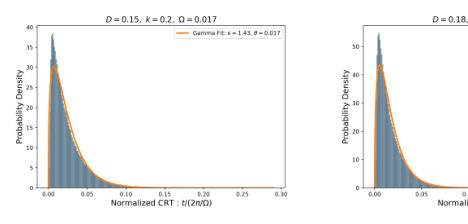
<figcaption class="paper-figure-caption"><b>Fig 1.</b> FIG. 1: Conditional residence time distribution for k = 0.2 and Ω= 0.017</figcaption>
</figure>
<figure class="paper-figure-card">
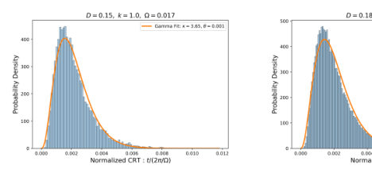
<figcaption class="paper-figure-caption"><b>Fig 2.</b> FIG. 2: Conditional residence time distribution for k = 1.0 and Ω= 0.017.</figcaption>
</figure>
<figure class="paper-figure-card">
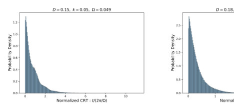
<figcaption class="paper-figure-caption"><b>Fig 3.</b> FIG. 3: Conditional residence time distribution for k = 0.05 and Ω= 0.049.</figcaption>
</figure>
<figure class="paper-figure-card">
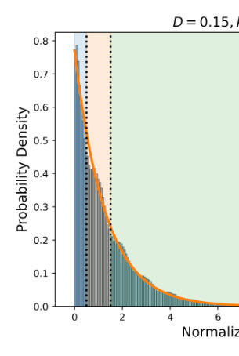
<figcaption class="paper-figure-caption"><b>Fig 4.</b> FIG. 4: CRT distribution showing different windows of transition</figcaption>
</figure>
<figure class="paper-figure-card">
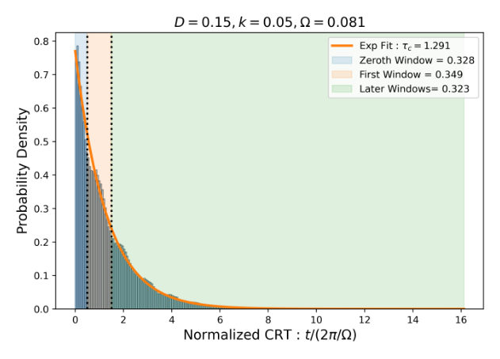
<figcaption class="paper-figure-caption"><b>Fig 5.</b> Fig. 4 shows the different regions of transition. We have calculated the probability that</figcaption>
</figure>
</div>

<p><strong>Summary.</strong> This work analyzes how two coupled particles (a dimer) transition across a barrier under external periodic driving and thermal noise. By introducing the Conditional Residence Time (CRT), the authors show that the time delay between the two monomers crossing the barrier is highly sensitive to the drive frequency. This establishes CRT as a key measure for understanding sequential, rate-limiting steps in coupled stochastic systems.</p>
<p><strong>Why it may be interesting.</strong> While focused on classical stochastic dynamics, the concept of analyzing sequential transitions (initiation vs. completion) using a specialized time delay metric like CRT is highly relevant to understanding decoherence or multi-step quantum tunneling processes in open quantum systems.</p>
<details>
<summary>Detailed structure</summary>
<p><strong>Main problem.</strong> The study investigates the completion dynamics of an overdamped dimer moving in a bistable potential under thermal fluctuations and a weak periodic force.</p>
<p><strong>Main result.</strong> The mean Conditional Residence Time (CRT) exhibits a non-monotonic dependence on the external drive frequency, demonstrating that transition initiation and completion are distinct sequential processes.</p>
<p><strong>Method.</strong> The authors use the Conditional Residence Time (CRT) as a diagnostic tool to quantify the delay between successive barrier crossings of two coupled monomers.</p>
<p><strong>Model / system.</strong> The system is an overdamped dimer modeled by coupled Langevin equations in a one-dimensional double well potential, incorporating harmonic and Lennard-Jones interactions, thermal noise, and a weak sinusoidal external force.</p>
<p><strong>Key observables.</strong> Conditional Residence Time (CRT), Mean First Passage Times (MFPTs), Escape rates, Probability distributions of transition windows.</p>
<p><strong>Important parameters / regimes.</strong> Coupling strength ($k$), external drive frequency ($\Omega$), Noise strength ($D$), and the competition between escape times and the driving period.</p>
<p><strong>Assumptions / limitations.</strong> The analysis assumes that the process can be partitioned into distinct time windows (immediate, first cycle, later cycles) to analyze sequential dynamics.</p>
<p><strong>Figures summary.</strong> Figures illustrate CRT distributions for varying coupling strengths and drive frequencies, showing how the mean CRT changes non-monotonically with $\Omega$, especially in the weak coupling regime.</p>
<p><strong>Paper structure.</strong> The paper introduces the physical model and Langevin equations, defines the CRT diagnostic tool, analyzes the dynamics by partitioning the process into three time windows, and concludes by establishing CRT's utility for sequential barrier crossing analysis.</p>
</details>
<details>
<summary>Abstract</summary>
<p>We investigate the completion dynamics of an overdamped dimer moving in a bistable potential under thermal fluctuations and a weak periodic force. Both monomers start in one of the two wells separated by a barrier. The transition is initiated when the monomer closer to the barrier makes a jump across it. The completion dynamics refers to the next part of the dynamics where the second monomer has to wait for some time before it can follow up. We use the Conditional Residence Time (CRT) to study the delay between the successive barrier crossing of the two monomers. The CRT distributions highlight qualitatively different regimes formed by the competition between the escape times of the lagging monomer and the time period of the external drive. The effect is strongest in the weak coupling regime where the delayed completion is spread across multiple forcing cycles. By partitioning this process into three windows, i.e. the immediate, first cycle and later cycles, we show that the probability that the lagging monomer will make a transition in the said cycle is redistributed among these pathways as we change the frequency of the drive. This leads to a non-monotonic dependence of the mean CRT on the frequency of the drive. Our results demonstrate that transition initiation and completion in a coupled system are two separate processes and establish CRT as a useful measure to quantify the sequential barrier crossing dynamics in coupled stochastic systems.</p>
</details>
<p><sub><a href="#top">↑ back to top</a></sub></p>

<p><a id="paper-2607.06193"></a></p>
<h3 id="robust-topologically-protected-edge-transport-in-doubly-chiral-active-particles"><a href="http://arxiv.org/abs/2607.06193v1">Robust Topologically Protected Edge Transport in Doubly Chiral Active Particles</a></h3>
<p><strong>Authors:</strong> Tristan Edwards, Maxim Nikolaev, Jaime Agudo-Canalejo<br>
<strong>Type:</strong> both · <strong>Category:</strong> statistical mechanics · <strong>PDF:</strong> <a href="https://arxiv.org/pdf/2607.06193v1">https://arxiv.org/pdf/2607.06193v1</a><br>
<strong>Analysis basis:</strong> full PDF text, analyzed in chunks
<strong>Topic relevance:</strong> <code>driven-dissipative phase transition</code> <strong>3/5</strong> · <code>methods for driven-dissipative</code> <strong>3/5</strong> · <code>non-equilibrium dynamics</code> <strong>3/5</strong> · <code>non-equilibrium universality</code> <strong>2/5</strong> · <code>Frenkel-Kontorova</code> <strong>1/5</strong> · <code>Keldysh / 2PI / non-Gaussian methods</code> <strong>1/5</strong> · <code>analog quantum simulation</code> <strong>1/5</strong> · <code>correlated / nonlocal dissipation</code> <strong>1/5</strong></p>
<div class="figure-strip-hint">↔ Scroll figures horizontally</div>
<div class="paper-figures-scroll">
<figure class="paper-figure-card">
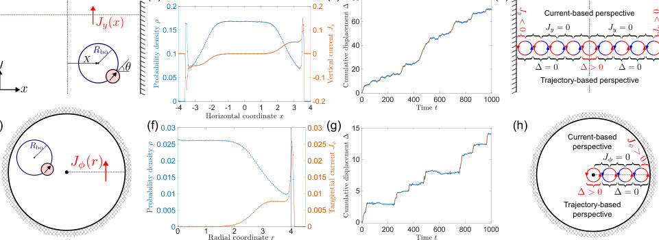
<figcaption class="paper-figure-caption"><b>Fig 1.</b> FIG. 1. Absence of edge transport in cABPs. Schematics of the (a) channel and (e) circular arena geometries. (b,f) Steady state probability density (blue) and vertical current (red) along the horizontal (channel) or radial (arena) coordinates, showing local net currents at the boundaries with the same counterclockwise chirality as the bulk orbits. (c,g) Evolution of the signed cumulative displacement in the vertical (channel) or tangential (arena) direction over time in the same simulations, which shows net drift (in the positive direction) only when the particle is within one bulk orbit radius from the channel or arena center (red segments). (d,h) Duality in the apparent origin of the...</figcaption>
</figure>
<figure class="paper-figure-card">
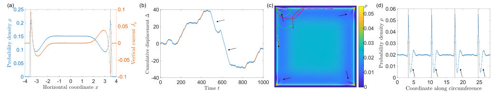
<figcaption class="paper-figure-caption"><b>Fig 2.</b> FIG. 2. Backscattering of chiral active rods or self-aligning cABPs. (a) Steady state probability density (blue) and vertical current (red) along the horizontal coordinate in channel geometry, showing local currents with opposite chirality to bulk orbits at the boundaries. (b) Evolution of the signed cumulative displacement in the vertical direction over time in the same simulation, which shows net drift in the positive direction when the particle is within one bulk orbit radius from the channel centerline (red segments) and in the negative direction when the particle enters a transport-inducing sliding mode along the boundaries (black arrows). (c) Steady state probability density in square...</figcaption>
</figure>
<figure class="paper-figure-card">
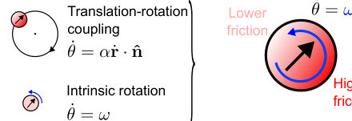
<figcaption class="paper-figure-caption"><b>Fig 3.</b> FIG. 3. (a) Discrete lattice stochastic model introduced in Ref. 25, which was shown to develop topologically protected edge currents in the regime γex &gt; γin. The internal states U,R,D,L stand for up, right, down, left. (b) External cycles in this model can be interpreted as causing simultaneous translation and rotation, and are thus analogous to translation-rotation coupling in the continuum limit. Internal cycles in the discrete model cause rotation without translation, and are thus analogous to intrinsic rotation in the continuum limit. (c) A doubly chiral ABP (dcABP) includes both sources of rotation, where translation-rotation coupling can arise from asymmetric friction. Analogy to the...</figcaption>
</figure>
<figure class="paper-figure-card">
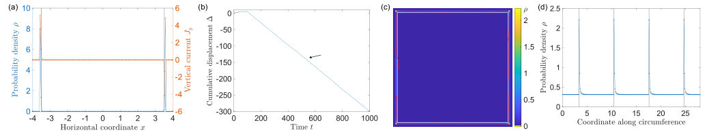
<figcaption class="paper-figure-caption"><b>Fig 4.</b> FIG. 4. Robust topologically protected edge currents in dcABPs. (a) Steady state probability density (blue) and vertical current (red) along the horizontal coordinate in channel geometry, showing strong accumulation and local currents with opposite chirality to bulk orbits at the boundaries. (b) Evolution of the signed cumulative displacement in the vertical direction over time in the same simulation, which shows net drift in the positive direction when the particle is within one bulk orbit radius from the channel centerline (red segments) and in the negative direction when the particle enters a long-lived transport-inducing sliding mode along the boundaries (black arrows). (c) Steady state...</figcaption>
</figure>
<figure class="paper-figure-card">
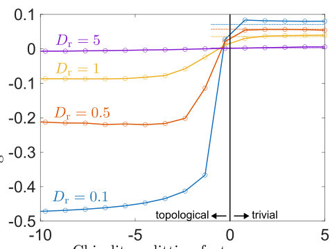
<figcaption class="paper-figure-caption"><b>Fig 5.</b> FIG. 5. Integrated current Φ obtained in stochastic simu- lations in a channel geometry, as a dcABP crosses from the trivial to the topological regime, for several values of rota- tional noise. The total angular velocity of the particle in the bulk is fixed to ωtot = 1, so that the bulk orbit radius is con- stant throughout the transition, while we set ω = ωtotχ and αv = ωtot(1−χ), where χ is a chirality splitting factor. In the trivial regime (no sliding mode, χ ≥0), Φ plateaus to the ‘spu- rious’ (non-transport-related) value given by Eq. (3) (dotted lines). In the topological regime (with sliding mode, χ &lt; 0), Φ develops opposite chirality to bulk orbits and reflects true transport. For...</figcaption>
</figure>
</div>

<p><strong>Summary.</strong> This paper introduces doubly chiral active particles (dcABPs) that exhibit a unique form of topologically protected transport along boundaries. By rigorously contrasting this behavior with simpler models, the authors establish a new physical mechanism for directed motion in active matter. The work bridges theoretical derivation, simulation, and experimental realization using vibrobots.</p>
<p><strong>Why it may be interesting.</strong> While focused on classical active matter, the concept of 'topological protection' in non-equilibrium systems is highly relevant to understanding robust edge states in quantum materials or engineered quantum circuits where dissipation and noise are present.</p>
<details>
<summary>Detailed structure</summary>
<p><strong>Main problem.</strong> To determine the conditions under which robust, topologically protected boundary-induced transport can occur in active particles, contrasting this with edge currents observed in simpler chiral models.</p>
<p><strong>Main result.</strong> Doubly chiral active Brownian Particles (dcABPs) exhibit robustly protected directed motion along boundaries, unlike simple cABPs or chiral rods which either lack protection or backscatter at corners.</p>
<p><strong>Method.</strong> The work combines theoretical analysis of steady-state probability currents with detailed numerical simulations and the design/testing of a physical vibrobot realization.</p>
<p><strong>Model / system.</strong> The primary model is the doubly chiral active Brownian particle (dcABP), characterized by two sources of chirality: an intrinsic angular velocity and a translation-rotation coupling arising from asymmetric friction. The analysis extends to simple cABPs and chiral rods in confined geometries (channels, arenas).</p>
<p><strong>Key observables.</strong> Edge currents ($J_y(x)$ or $J_\phi(r)$), integrated net transport ($\Phi$), and the persistence of directed motion around corners.</p>
<p><strong>Important parameters / regimes.</strong> The relative strengths of intrinsic rotation versus translation-rotation coupling, and the presence/absence of boundary curvature are critical parameters determining topological protection.</p>
<p><strong>Assumptions / limitations.</strong> Initial analyses often assume overdamped dynamics for cABPs; later work rigorously derives transport using stochastic averaging techniques applicable to various noise regimes.</p>
<p><strong>Figures summary.</strong> Figures illustrate schematics comparing current distributions and cumulative displacement for different particle types (cABP vs. dcABP) in confined geometries, demonstrating the failure of simple models to achieve true boundary-induced transport.</p>
<p><strong>Paper structure.</strong> The paper first establishes that simple cABPs do not exhibit true boundary-induced transport ($\Phi$ arises from bulk orbits). It then contrasts this with chiral rods showing backscattering. Finally, it introduces and proves the topological protection mechanism for dcABPs using theory (Appendix A) and simulation/experimentation.</p>
</details>
<details>
<summary>Abstract</summary>
<p>Using theory, simulation, and experiment, we introduce a new class of active particle which we term doubly chiral active Brownian particles (dcABPs), which show robust topologically protected transport along boundaries without backscattering at corners. Their double chirality stems from the coexistence of an intrinsic angular velocity, which can cause rotation independently of translation, and a translation-rotation coupling inducing cross-alignment to the instantaneous velocity, which causes rotation only concomitantly with translation. A mechanically detailed model shows that the latter effect can arise from an asymmetric friction distribution in the direction perpendicular to the self-propulsion direction. We show that topologically protected modes emerge when the two sources of chirality have opposite sign and the intrinsic rotation is weaker than the translation-rotation coupling. In the deterministic limit, we characterize the emergence of these modes not only along straight boundaries, but also along curved boundaries and during interparticle interactions. We provide a proof-of-principle experimental realization by building a doubly chiral vibrobot. While setting the work into context, we moreover show that the topologically protected boundary-induced transport of dcABPs stands in contrast to the edge currents observed for simple chiral ABPs, which we demonstrate are not associated with boundary-induced transport, as well as to those observed for chiral active rods or self-aligning chiral ABPs, which we show to be associated with boundary-induced transport but to backscatter at corners, implying lack of topological protection.</p>
</details>
<p><sub><a href="#top">↑ back to top</a></sub></p>

<p><a id="paper-2607.05693"></a></p>
<h3 id="free-multiplicative-convolution-and-erlang-moments-in-monitored-quantum-transport"><a href="http://arxiv.org/abs/2607.05693v1">Free Multiplicative Convolution and Erlang Moments in Monitored Quantum Transport</a></h3>
<p><strong>Authors:</strong> Joon Hyung Lee<br>
<strong>Type:</strong> theory · <strong>Category:</strong> statistical mechanics · <strong>PDF:</strong> <a href="https://arxiv.org/pdf/2607.05693v1">https://arxiv.org/pdf/2607.05693v1</a><br>
<strong>Analysis basis:</strong> full PDF text, analyzed in chunks
<strong>Topic relevance:</strong> <code>Keldysh / 2PI / non-Gaussian methods</code> <strong>3/5</strong> · <code>non-equilibrium dynamics</code> <strong>2/5</strong> · <code>non-equilibrium universality</code> <strong>2/5</strong> · <code>analog quantum simulation</code> <strong>1/5</strong> · <code>correlated / nonlocal dissipation</code> <strong>1/5</strong> · <code>driven-dissipative phase transition</code> <strong>1/5</strong> · <code>entanglement &amp; information structure</code> <strong>1/5</strong> · <code>measurement-induced transitions</code> <strong>1/5</strong> · <code>methods for driven-dissipative</code> <strong>1/5</strong> · <code>quantum measurements</code> <strong>1/5</strong></p>
<div class="figure-strip-hint">↔ Scroll figures horizontally</div>
<div class="paper-figures-scroll">
<figure class="paper-figure-card">
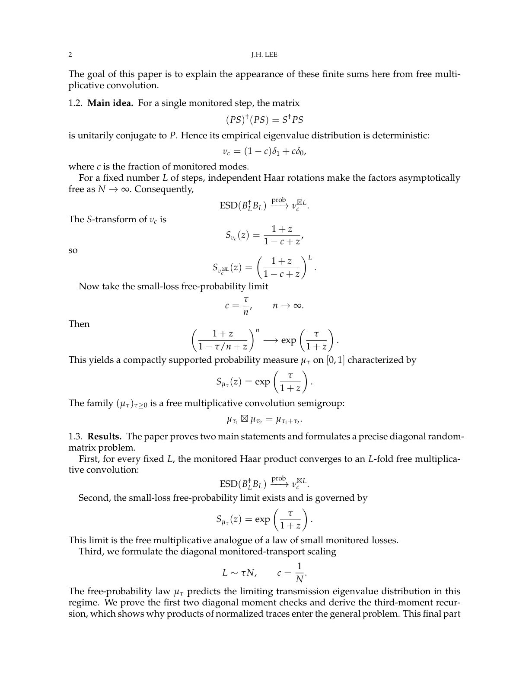
<figcaption class="paper-figure-caption"><b>Fig 1.</b> Low-resolution page preview, page 2</figcaption>
</figure>
<figure class="paper-figure-card">
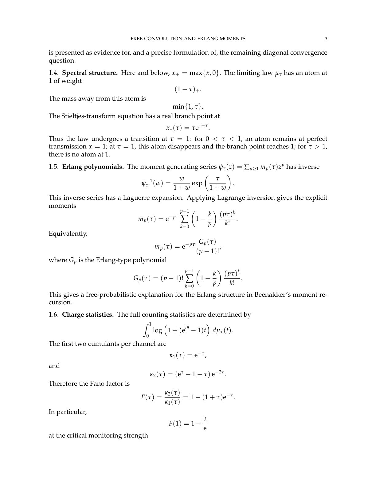
<figcaption class="paper-figure-caption"><b>Fig 2.</b> Low-resolution page preview, page 3</figcaption>
</figure>
<figure class="paper-figure-card">
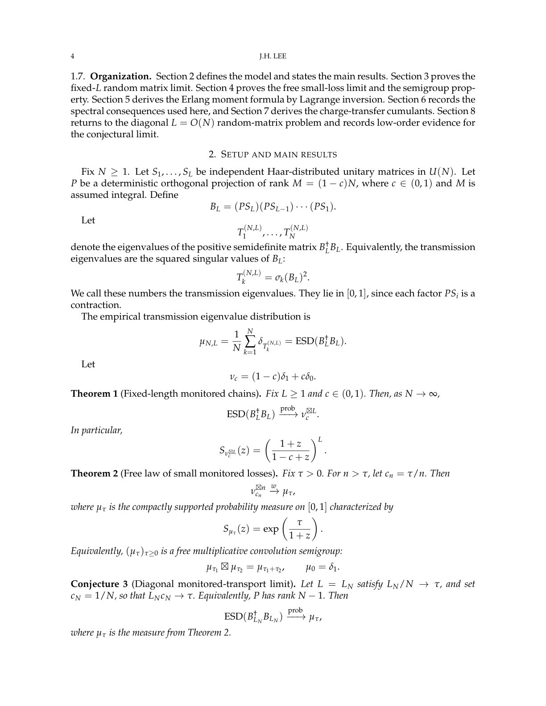
<figcaption class="paper-figure-caption"><b>Fig 3.</b> Low-resolution page preview, page 4</figcaption>
</figure>
<figure class="paper-figure-card">
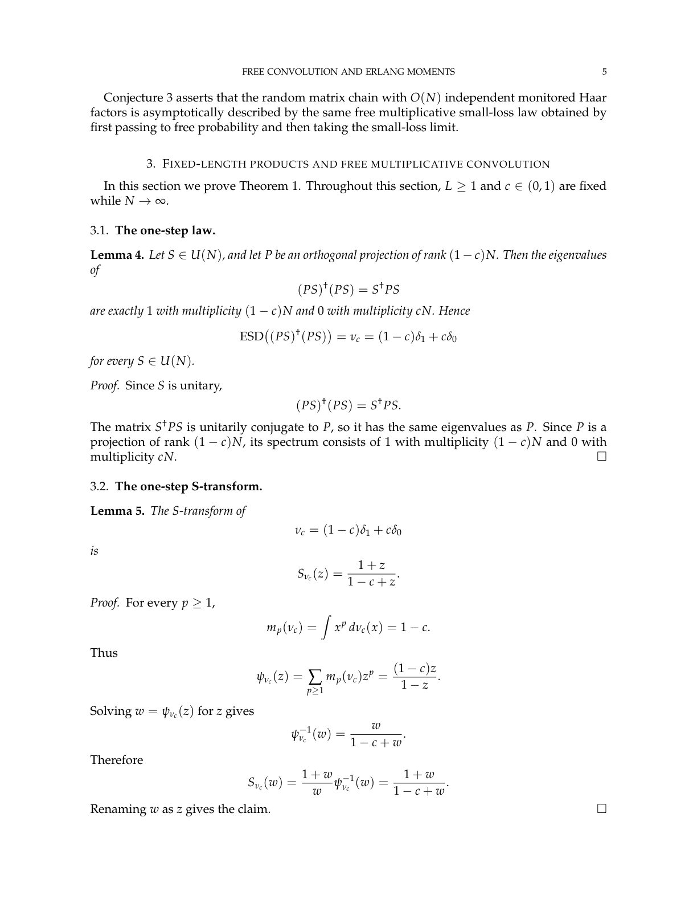
<figcaption class="paper-figure-caption"><b>Fig 4.</b> Low-resolution page preview, page 5</figcaption>
</figure>
<figure class="paper-figure-card">
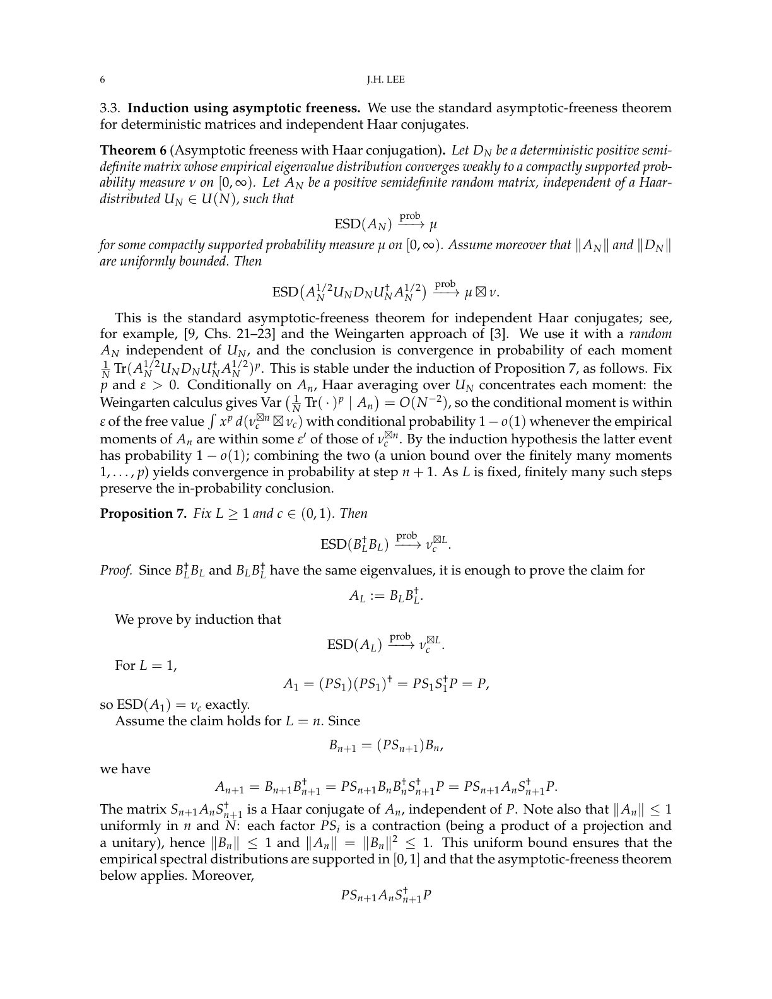
<figcaption class="paper-figure-caption"><b>Fig 5.</b> Low-resolution page preview, page 6</figcaption>
</figure>
</div>

<p><strong>Summary.</strong> This paper uses free probability theory to analyze the transmission eigenvalues in monitored quantum transport. It proves that under specific limiting conditions (the small-loss limit), the eigenvalue distribution converges to a measure $\mu_	au$ governed by an exponential S-transform. This reveals underlying algebraic structures, such as the semigroup property of the limiting process.</p>
<p><strong>Why it may be interesting.</strong> The connection between random matrix theory (Haar unitaries) and free probability tools provides a powerful framework for analyzing transport phenomena in mesoscopic systems, which is relevant to open quantum systems dynamics.</p>
<details>
<summary>Detailed structure</summary>
<p><strong>Main problem.</strong> To determine the limiting distribution and associated moments for transmission eigenvalues in a monitored quantum transport system undergoing repeated free multiplicative convolutions.</p>
<p><strong>Main result.</strong> The empirical eigenvalue distribution converges to $\mu_	au$, characterized by the S-transform $S_{\mu_	au}(z) = \exp\left(rac{	au}{1+z}
ight)$, which exhibits a semigroup property ($\mu_{	au_1} oxtimes \mu_{	au_2} = \mu_{	au_1+	au_2}$).</p>
<p><strong>Method.</strong> The analysis heavily relies on Free Probability Theory, utilizing S-transforms and applying Lagrange inversion to derive explicit formulas for the moments and cumulants of the limiting measure.</p>
<p><strong>Model / system.</strong> The model is monitored quantum transport described by a chain of Kraus operators $B_L = (PS_L)\cdots(PS_1)$, where $S_i$ are independent Haar unitaries and $P$ is a projection. The eigenvalues of $B^\dagger_L B$ represent the transmission eigenvalues.</p>
<p><strong>Key observables.</strong> Transmission eigenvalues, empirical eigenvalue distribution ($ ext{ESD}$), charge-transfer cumulants ($\kappa_r(    au)$), and Fano factor ($F(    au)$).</p>
<p><strong>Important parameters / regimes.</strong> Number of steps $L$, monitoring fraction $c$, and the small-loss limit parameter $  au$. Key regimes include fixed-$L$ and diagonal scaling ($L \sim 	au N, c=1/N$).</p>
<p><strong>Assumptions / limitations.</strong> The convergence of empirical spectral distributions to the limiting measure $\mu_	au$ is assumed or proven in specific limits.</p>
<p><strong>Paper structure.</strong> The paper first establishes the fixed-$L$ limit using free multiplicative convolution, then analyzes the small-loss limit ($   ext{Theorem 2}$) to find the limiting measure $\mu_	au$. Finally, it investigates the diagonal scaling regime by calculating higher-order cumulants and confirming moment convergence.</p>
</details>
<details>
<summary>Abstract</summary>
<p>We study the transmission eigenvalues of monitored Haar products \[   B_L=(PS_L)(PS_{L-1})\cdots(PS_1), \] where the $S_i$ are independent Haar unitaries and $P$ is a deterministic projection. For fixed $L$, we prove that the empirical eigenvalue distribution of $B_L^\dagger B_L$ converges to $ν_c^{\boxtimes L}$, where $ν_c=(1-c)δ_1+cδ_0$. We then take the free small-loss limit and identify the limiting law by \[   S_{μ_τ}(z)=\exp\left(\fracτ{1+z}\right). \] Lagrange inversion gives explicit Erlang-type moments, explaining the polynomials appearing in Beenakker's recursion. We also record spectral consequences, including the atom $μ_τ(\{1\})=(1-τ)_+$ and the real branch point $τ\mathrm{e}^{1-τ}$, and formulate the diagonal scaling $L\simτN$, $c=1/N$, as a quantitative convergence problem supported by low-order moment checks.</p>
</details>
<p><sub><a href="#top">↑ back to top</a></sub></p>

<p><a id="paper-2607.05672"></a></p>
<h3 id="modern-view-of-activated-rate-processes-unidirectional-fluxes-at-equilibrium-correlation-functions-and-splitting-probabilities"><a href="http://arxiv.org/abs/2607.05672v1">Modern view of activated rate processes: unidirectional fluxes at equilibrium, correlation functions, and splitting probabilities</a></h3>
<p><strong>Authors:</strong> Alexander M. Berezhkovskii, Kevin Song, Dmitrii E. Makarov<br>
<strong>Type:</strong> theory · <strong>Category:</strong> statistical mechanics · <strong>PDF:</strong> <a href="https://arxiv.org/pdf/2607.05672v1">https://arxiv.org/pdf/2607.05672v1</a><br>
<strong>Analysis basis:</strong> full PDF text, analyzed in chunks
<strong>Topic relevance:</strong> <code>Keldysh / 2PI / non-Gaussian methods</code> <strong>3/5</strong> · <code>methods for driven-dissipative</code> <strong>3/5</strong> · <code>non-equilibrium dynamics</code> <strong>3/5</strong> · <code>non-equilibrium universality</code> <strong>2/5</strong> · <code>correlated / nonlocal dissipation</code> <strong>1/5</strong> · <code>driven-dissipative phase transition</code> <strong>1/5</strong> · <code>quantum measurements</code> <strong>1/5</strong></p>
<div class="figure-strip-hint">↔ Scroll figures horizontally</div>
<div class="paper-figures-scroll">
<figure class="paper-figure-card">
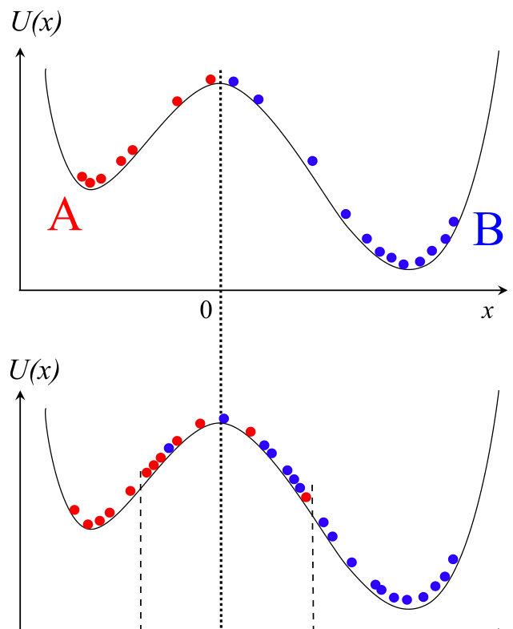
<figcaption class="paper-figure-caption"><b>Fig 1.</b> Figure 1. Mapping of continuous dynamics in a potential of mean force U(x) onto two states. Each</figcaption>
</figure>
<figure class="paper-figure-card">
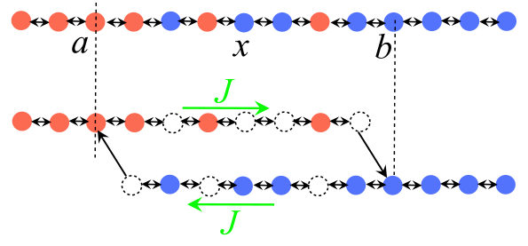
<figcaption class="paper-figure-caption"><b>Fig 2.</b> Figure 2. Classifying individual members of the equilibrium ensemble into two types, A and B.</figcaption>
</figure>
</div>

<p><strong>Summary.</strong> This perspective paper rigorously re-derives the theory of activated rate processes, showing how continuous Brownian motion maps onto discrete chemical kinetics. It resolves ambiguities in defining reaction rates by introducing a concept of unidirectional flux based on trajectory history rather than simple spatial partitioning. This provides a unified and robust theoretical tool for studying barrier crossing phenomena.</p>
<p><strong>Why it may be interesting.</strong> This work provides advanced theoretical tools for calculating rates in complex systems where dynamics are governed by free energy landscapes, which is foundational knowledge for understanding relaxation processes in many quantum or mesoscopic physical systems.</p>
<details>
<summary>Detailed structure</summary>
<p><strong>Main problem.</strong> The paper aims to develop a rigorous theoretical framework for mapping continuous, diffusive dynamics (like Brownian motion) onto discrete-state chemical kinetics describing activated barrier crossing.</p>
<p><strong>Main result.</strong> It establishes that the rate constant can be calculated robustly by considering unidirectional fluxes between sub-ensembles defined by trajectory history, yielding results consistent with established theories like Kramers' theory and correlation function methods.</p>
<p><strong>Method.</strong> The authors use concepts from non-equilibrium statistical mechanics, analyzing fluxes in phase space and comparing different mathematical formulations (e.g., conditional probabilities vs. relaxation modes) to ensure physical consistency.</p>
<p><strong>Model / system.</strong> The model is a particle undergoing Brownian motion between two potential wells ('reactant' and 'product') separated by an activation barrier $U(x)$. The dynamics are governed by the Langevin or Smoluchowski equation.</p>
<p><strong>Key observables.</strong> Reaction rate coefficients ($k_{A	o B}$), equilibrium populations, and the unidirectional reactive flux ($J_{A 	o B}$).</p>
<p><strong>Important parameters / regimes.</strong> The barrier height relative to thermal energy ($U(0) - U(a) \gg k_BT$) is a crucial parameter for simplifying assumptions.</p>
<p><strong>Assumptions / limitations.</strong> Naive state separation based only on position fails; the analysis requires considering the full trajectory history and assuming high barriers allow flux independence from boundary placement.</p>
<p><strong>Figures summary.</strong> Figure 1 illustrates two methods of mapping continuous dynamics to discrete states (position cut vs. trajectory history). Figure 2 conceptually shows the cycle of ensemble members leading to a net unidirectional flux.</p>
<p><strong>Paper structure.</strong> The paper progresses by reviewing Kramers' theory, identifying the mathematical shortcomings of simple state separation, and then rigorously constructing an internally consistent mapping using fluxes derived from both conditional probabilities and time-evolution operator analysis.</p>
</details>
<details>
<summary>Abstract</summary>
<p>More than 80 years ago Kramers published a paper calculating how fast a Brownian particle escapes from a potential well over an activation barrier. Since then Kramers' model has been widely adopted by nuclear physics, biophysics and chemical physics communities as a description of activated barrier crossing. From a chemical kinetics perspective, Kramers' theory provides a mapping from continuous dynamics to discrete-state chemical kinetics. Motivated by recent developments, this Perspective provides a rigorous way of performing such a mapping, explaining why and how Kramers' theory works from several points of view. Specifically, we consider transitions of a Brownian particle between two potential wells corresponding to the <code>reactant'' and the</code>product'' of a chemical reaction. A central unifying idea is to divide the equilibrium ensemble of possible states of the system into two sub-ensembles corresponding to the reactant and product states and then to consider fluxes between these sub-ensembles. Importantly, naive separation based on the location measured relative to the barrier top does not result in a mapping that is physically tenable, and instead the past of the trajectory should be considered. Thus constructed reactant and product ensembles provide an internally consistent description of the problem when also viewed from two different perspectives: one based on the definition of the rate as a conditional transition probability per unit time and the other based on the relaxation modes of the time-evolution operator governing the dynamics.</p>
</details>
<p><sub><a href="#top">↑ back to top</a></sub></p>

<p><a id="paper-2607.05506"></a></p>
<h3 id="anomalous-suppression-of-quantum-chaos-between-two-integrable-limits"><a href="http://arxiv.org/abs/2607.05506v1">Anomalous suppression of quantum chaos between two integrable limits</a></h3>
<p><strong>Authors:</strong> Roopayan Ghosh, Henry Davenport, Frank Schindler<br>
<strong>Type:</strong> theory · <strong>Category:</strong> other · <strong>PDF:</strong> <a href="https://arxiv.org/pdf/2607.05506v1">https://arxiv.org/pdf/2607.05506v1</a><br>
<strong>Analysis basis:</strong> full PDF text, analyzed in chunks
<strong>Topic relevance:</strong> <code>analog quantum simulation</code> <strong>3/5</strong> · <code>driven-dissipative phase transition</code> <strong>2/5</strong> · <code>non-equilibrium dynamics</code> <strong>2/5</strong> · <code>non-equilibrium universality</code> <strong>2/5</strong> · <code>Frenkel-Kontorova</code> <strong>1/5</strong> · <code>entanglement &amp; information structure</code> <strong>1/5</strong> · <code>methods for driven-dissipative</code> <strong>1/5</strong> · <code>scars &amp; prethermalization</code> <strong>1/5</strong></p>
<div class="figure-strip-hint">↔ Scroll figures horizontally</div>
<div class="paper-figures-scroll">
<figure class="paper-figure-card">
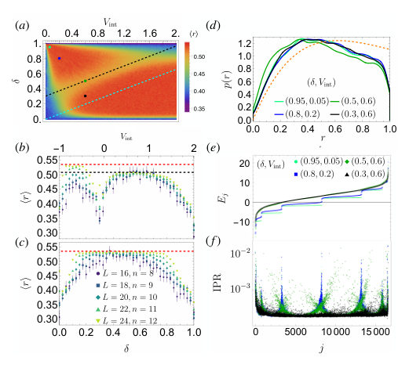
<figcaption class="paper-figure-caption"><b>Fig 1.</b> FIG. 1. (a) Adjacent gap ratio ⟨r⟩for the model in Eq. (3) for a L = 22, half filled chain with n = 11 electrons over a broad parameter regime, exhibiting a pronounced anomalous dip. The black dashed line indicates an approximate linear fit through this anomalous region, while the cyan dashed line is drawn parallel to it through a representative generic region. (b) ⟨r⟩along the cut δ = 1/3 + Vint/3 (black dashed line in the left panel). (c) ⟨r⟩along the cut δ = Vint/3 (cyan dashed line). Different colors denote system sizes L = 16–24 at half filling. (d) Probability distribution of consecutive level spac- ing ratio r comparing four representative points from Fig. 1(a) for L = 24 at half...</figcaption>
</figure>
<figure class="paper-figure-card">
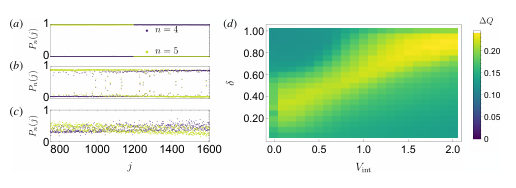
<figcaption class="paper-figure-caption"><b>Fig 2.</b> FIG. 2. (a), (b), (c) Expectation of the jth eigenstate in the projector onto the nth dimerised limit MB band (denoted Pn(j)) for n = 4, 5. Eigenstates calculated for L = 22, V = 0.6 and (a) δ = 0.95, (b) δ = 0.45 and (c) δ = 0.05. (d) Standard deviation ∆Q of Q = Q(j) defined by Eq. (11) showing a rise approximately at regions of anomalously low ⟨r⟩.</figcaption>
</figure>
</div>

<p><strong>Summary.</strong> The paper reveals an unexpected suppression of quantum chaos ($\langle r 
angle$) in the interacting SSH model deep within the non-integrable regime. This effect is fundamentally linked to incomplete hybridization between many-body band states rather than simple spectral overlap or localization. The findings challenge conventional assumptions linking non-integrability directly to fully chaotic level statistics.</p>
<p><strong>Why it may be interesting.</strong> This work provides a detailed mechanism for spectral statistics deviations that are purely structural (band geometry) rather than arising from standard sources like disorder or integrability breaking, which is highly relevant for understanding quantum dynamics in engineered lattices.</p>
<details>
<summary>Detailed structure</summary>
<p><strong>Main problem.</strong> The study investigates an anomalous suppression of quantum chaos, evidenced by reduced level repulsion ($\langle r 
angle$), in non-integrable many-body systems.</p>
<p><strong>Main result.</strong> This anomaly is attributed not to integrability or disorder, but specifically to incomplete hybridization between distinct many-body band states inherited from the underlying single-particle structure.</p>
<p><strong>Method.</strong> The authors use exact diagonalization and semi-analytical perturbation theory to calculate level statistics ($\langle r 
angle$) across varying interaction strengths and hopping parameters.</p>
<p><strong>Model / system.</strong> The system is the interacting Su-Schrieffer-Heeger (SSH) chain model, described by a Hamiltonian combining non-interacting SSH terms with nearest-neighbor density-density interactions. The analysis probes transitions between integrable limits.</p>
<p><strong>Key observables.</strong> Mean level-spacing ratio ($\langle r 
angle$), Inverse Participation Ratio (IPR), and the fluctuation measure $\Delta Q$ quantifying hybridization strength.</p>
<p><strong>Important parameters / regimes.</strong> Alternating hopping parameter ($\delta$), interaction strength ($V_{	ext{int}}$), and symmetry breaking terms like staggered potential ($h$).</p>
<p><strong>Assumptions / limitations.</strong> The analysis relies on resolving symmetries to benchmark against GOE statistics, and the mechanism is linked to the geometry of many-body minibands.</p>
<p><strong>Figures summary.</strong> Figures show $\langle r 
angle$ dipping anomalously in non-integrable regimes compared to GOE expectations; other figures map out the closing of MB band gaps and the correlation between minimal $\langle r 
angle$ and maximal hybridization fluctuations ($\Delta Q$).</p>
<p><strong>Paper structure.</strong> The paper systematically analyzes the system by first establishing the expected chaotic behavior (GOE), then identifying the anomalous dip in $\langle r 
angle$, attributing it to incomplete hybridization, and finally using advanced techniques like perturbation theory and symmetry analysis to quantify this geometric origin.</p>
</details>
<details>
<summary>Abstract</summary>
<p>Level statistics in non-integrable quantum many-body systems with time reversal symmetry are expected to follow the Gaussian Orthogonal Ensemble (GOE), a hallmark of quantum chaos. However, we show that the interacting Su-Schrieffer-Heeger model exhibits a clear suppression of the mean level-spacing ratio $\langle r\rangle$ from the GOE value $\approx 0.535$, persisting deep in the nonintegrable regime. This challenges the conventional association between non-integrability and fully chaotic spectral statistics. Using exact diagonalization supported by semi-analytical arguments, we trace this anomaly to incomplete hybridization of many-body band states inherited from the noninteracting band structure. The resulting restructuring of the spectrum weakens level repulsion without restoring integrability. We show the robustness of this mechanism in extensions of the model which break chiral and inversion symmetry.</p>
</details>
<p><sub><a href="#top">↑ back to top</a></sub></p>

<p><a id="paper-2607.06137"></a></p>
<h3 id="quantum-decoherence-a-study-applied-to-quarkonium-like-bound-states-in-strongly-interacting-matter"><a href="http://arxiv.org/abs/2607.06137v1">Quantum decoherence: a study applied to quarkonium-like bound states in strongly interacting matter</a></h3>
<p><strong>Authors:</strong> Gabriele Coci, Salvatore Plumari, Giuseppe Falci<br>
<strong>Type:</strong> theory · <strong>Category:</strong> statistical mechanics · <strong>PDF:</strong> <a href="https://arxiv.org/pdf/2607.06137v1">https://arxiv.org/pdf/2607.06137v1</a><br>
<strong>Analysis basis:</strong> full PDF text, analyzed in chunks
<strong>Topic relevance:</strong> <code>methods for driven-dissipative</code> <strong>3/5</strong> · <code>non-equilibrium dynamics</code> <strong>3/5</strong> · <code>non-equilibrium universality</code> <strong>2/5</strong> · <code>Keldysh / 2PI / non-Gaussian methods</code> <strong>1/5</strong> · <code>correlated / nonlocal dissipation</code> <strong>1/5</strong> · <code>driven-dissipative phase transition</code> <strong>1/5</strong> · <code>entanglement &amp; information structure</code> <strong>1/5</strong></p>
<div class="figure-strip-hint">↔ Scroll figures horizontally</div>
<div class="paper-figures-scroll">
<figure class="paper-figure-card">
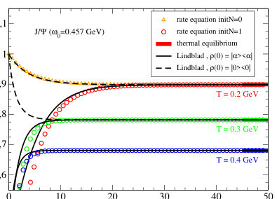
<figcaption class="paper-figure-caption"><b>Fig 1.</b> FIG. 1: (color online): Population of J/Ψ ground state as function of time in static heat bath at indicated tempera- ture T = 0.2, 0.3, 0.4 GeV. The black curves are the ρ00(t) elements obtained from the Lindblad equation for two ini- tial conditions: ground state |0⟩(dashed), coherent state |α⟩ (solid) with α = 1. Lindblad evolution is compared with re- sults from rate equations. Both cases evolve asymptotically to thermal equilibrated values neq(ω0, T) indicated with the thick colored strips and labeled with the T values.</figcaption>
</figure>
<figure class="paper-figure-card">
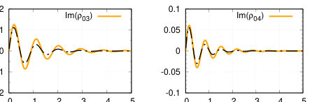
<figcaption class="paper-figure-caption"><b>Fig 2.</b> FIG. 3: Time evolution of imaginary part of coherence ele- ments ρ0n with n = 1, 2, 3, 4 (from top left to bottom right). The thick solid orange line is the numerical result from the Lindblad equation and the dash-dotted black line is the ap- proximate analytic behavior in Eq. (30). The model parame- ters are the same reported in the caption of Fig. 2.</figcaption>
</figure>
<figure class="paper-figure-card">
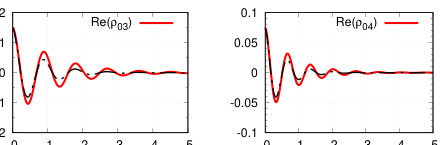
<figcaption class="paper-figure-caption"><b>Fig 3.</b> FIG. 2: Time evolution of the real part of coherence ele- ments ρ0n with n = 1, 2, 3, 4 (from top left to bottom right). The thick solid red line is the result obtained by numeri- cally solving the Lindblad equation with initial density ma- trix ρ(0) = |α⟩⟨α| with α = 1, frequency ω0 = 0.457 GeV and bath temperature T = 0.3 GeV. The dash-dotted black line corresponds to the analytic trend given by Eq. (30) with an coefficient from Eq. (32) assuming n ≫1.</figcaption>
</figure>
<figure class="paper-figure-card">
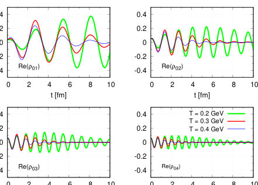
<figcaption class="paper-figure-caption"><b>Fig 4.</b> FIG. 4: (color online): Time evolution of the real part of coherence elements for three different heat bath temperatures T = 0.2 −0.4 GeV. The frequency of the system is set to ω0 = 0.457 GeV.</figcaption>
</figure>
<figure class="paper-figure-card">
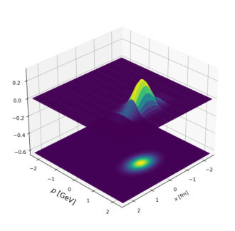
<figcaption class="paper-figure-caption"><b>Fig 5.</b> FIG. 5: Contour plot of Wigner distribution for initial coher- ent state |α⟩with α = 2.</figcaption>
</figure>
</div>

<p><strong>Summary.</strong> This paper models how quarkonium bound states lose their quantum coherence when passing through the hot, expanding medium created in heavy-ion collisions. Using an open quantum system framework and the Lindblad equation, the authors show that while decoherence occurs rapidly at high initial temperatures, the specific hydrodynamic expansion profile is crucial for accurately predicting this loss of quantum information.</p>
<p><strong>Why it may be interesting.</strong> This work bridges fundamental concepts from open quantum systems theory with high-energy nuclear physics phenomenology, providing a quantitative tool to study non-equilibrium quantum dynamics in extreme matter states.</p>
<details>
<summary>Detailed structure</summary>
<p><strong>Main problem.</strong> The study investigates quantum decoherence of quarkonium-like bound states as they propagate through a hot, strongly interacting medium like the Quark-Gluon Plasma (QGP). The goal is to quantify how environmental interactions cause the loss of quantum coherence.</p>
<p><strong>Main result.</strong> The rate and manner of decoherence are significantly influenced by the temperature evolution of the expanding medium; however, viscous effects were found not to substantially alter the decoherence process compared to ideal hydrodynamics.</p>
<p><strong>Method.</strong> The analysis employs an open quantum systems approach, modeling the system's time evolution using the Lindblad master equation for the reduced density matrix. This is extended to incorporate time-dependent coupling strengths simulating hydrodynamic expansion.</p>
<p><strong>Model / system.</strong> The system is modeled as a 1D damped harmonic oscillator (representing quarkonium) coupled to an environment reservoir representing the QGP degrees of freedom. The evolution is governed by the Lindblad equation derived under Born-Markov approximations.</p>
<p><strong>Key observables.</strong> Loss of quantum coherence, quantified by analyzing the reduced density matrix elements ($  ext{Im}(
ho_{n0})$), and the Wigner function profile $W(x, p, t)$.</p>
<p><strong>Important parameters / regimes.</strong> Initial temperature ($T_0$), time scale ($    au \sim 1-5$ fm), coupling strength ($\kappa$), and the ratio of shear viscosity to entropy density ($\eta/s$).</p>
<p><strong>Assumptions / limitations.</strong> The primary assumptions include using the Born-Markov approximation, assuming weak system-reservoir coupling, and modeling the environment dynamics via ideal or viscous hydrodynamics.</p>
<p><strong>Figures summary.</strong> Figures illustrate the time evolution of coherence elements (e.g., $   ext{Im}(
ho_{n0})$) comparing static vs. expanding baths, and contour plots show the Wigner function evolving from quantum fringes toward a classical Gaussian profile in an expanding QGP medium.</p>
<p><strong>Paper structure.</strong> The paper establishes the open quantum system framework using the Lindblad equation for quarkonium decoherence. It then extends this model to include time-dependent coupling strengths mimicking QGP expansion, comparing results across different hydrodynamic models (ideal vs. viscous) and analyzing the resulting loss of coherence.</p>
</details>
<details>
<summary>Abstract</summary>
<p>We study the quantum decoherence of a bound state interacting with a reservoir of strongly interacting matter within the framework of open quantum systems. The bound state is modeled as a quantum harmonic oscillator whose parameters are tuned to reproduce the root-mean-square radius of $J/Ψ$ particle. The surrounding medium, representing the many degrees of freedom of strongly interacting matter, acts as an environment that induces dissipation and decoherence through system-reservoir coupling. By analyzing the time evolution of the reduced density matrix, we quantify the loss of quantum coherence and its dependence on medium properties. Subsequently, we extend the model by introducing a time dependence in the system-thermal bath coupling, thereby simulating a temperature evolution similar to that occurring during the expansion of a fireball in the central region of heavy-ion collisions. We find that a temperature evolution has a relevant impact on the way the system loses coherence through the coupling with the expanding medium. Finally, we estimate the impact of the time-dependent temperature on the decoherence process, also analyzing a scenario that includes viscous effects without finding a significant change with respect to ideal hydrodynamical evolution.</p>
</details>
<p><sub><a href="#top">↑ back to top</a></sub></p>

<p><a id="paper-2607.06307"></a></p>
<h3 id="quantum-probabilistic-local-differential-privacy-structural-properties-and-sample-complexity-bounds"><a href="http://arxiv.org/abs/2607.06307v1">Quantum Probabilistic Local Differential Privacy: Structural Properties and Sample Complexity Bounds</a></h3>
<p><strong>Authors:</strong> Xian Shi<br>
<strong>Type:</strong> theory · <strong>Category:</strong> quantum information and computing · <strong>PDF:</strong> <a href="https://arxiv.org/pdf/2607.06307v1">https://arxiv.org/pdf/2607.06307v1</a><br>
<strong>Analysis basis:</strong> full PDF text, analyzed in chunks
<strong>Topic relevance:</strong> <code>quantum measurements</code> <strong>3/5</strong> · <code>entanglement &amp; information structure</code> <strong>2/5</strong> · <code>measurement-induced transitions</code> <strong>2/5</strong> · <code>methods for driven-dissipative</code> <strong>2/5</strong> · <code>Keldysh / 2PI / non-Gaussian methods</code> <strong>1/5</strong> · <code>correlated / nonlocal dissipation</code> <strong>1/5</strong> · <code>driven-dissipative phase transition</code> <strong>1/5</strong></p>
<div class="figure-strip-hint">↔ Scroll figures horizontally</div>
<div class="paper-figures-scroll">
<figure class="paper-figure-card">
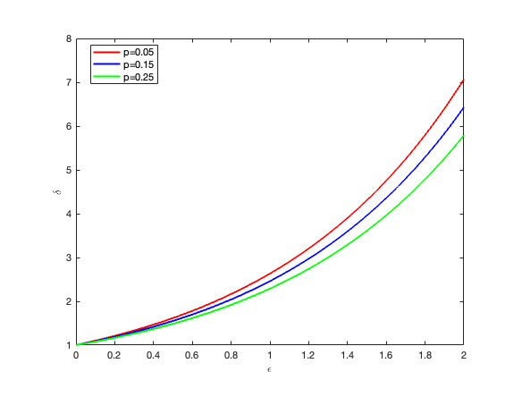
<figcaption class="paper-figure-caption"><b>Fig 1.</b> FIG. 1: The QPrDP for the global depolarizing noise. Here ρ and σ are states with E1(ρ||σ) = χ = 0.01. The red line, blue line and green line denote the function δ = f(ϵ) when p = 0.05, p = 0.15 and p = 0.25, respectively.</figcaption>
</figure>
<figure class="paper-figure-card">
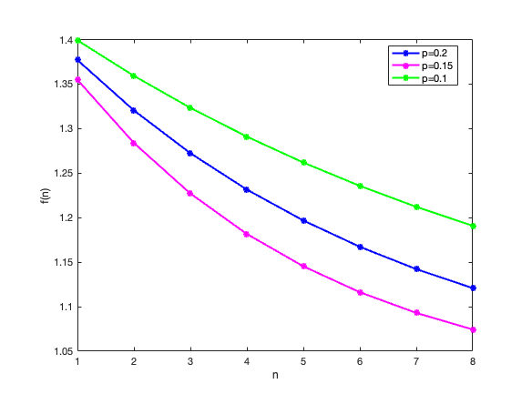
<figcaption class="paper-figure-caption"><b>Fig 2.</b> FIG. 2: The QPrDP for the n compositions of the global depolarizaing noise. Here ϵ = 0.2, ρ and σ are states with E1(ρ||σ) = 0.1. The blue line, red line and green line denote the function δ = f(n) when p = 0.1, p = 0.15 and p = 0.2, respectively.</figcaption>
</figure>
</div>

<p><strong>Summary.</strong> This paper establishes Quantum Probabilistic Local Differential Privacy (QPrLDP) as a relaxed framework for quantifying privacy loss in quantum data analysis. It analyzes the structural properties of this notion and applies it to derive concrete sample complexity bounds for private quantum hypothesis testing. This provides essential theoretical tools for ensuring privacy guarantees when performing statistical inference using quantum resources.</p>
<p><strong>Why it may be interesting.</strong> While focused on privacy theory, the rigorous mathematical tools developed—especially those involving divergences and channel analysis—are highly relevant to characterizing information leakage or distinguishability in open quantum systems.</p>
<details>
<summary>Detailed structure</summary>
<p><strong>Main problem.</strong> The paper introduces and rigorously studies Quantum Probabilistic Local Differential Privacy (QPrLDP), a relaxation of quantum local differential privacy.</p>
<p><strong>Main result.</strong> It derives sample complexity bounds for probabilistically privatized asymmetric and symmetric quantum hypothesis testing, providing a systematic foundation for probabilistic privacy guarantees in quantum inference.</p>
<p><strong>Method.</strong> The study involves defining QPrLDP based on spectral violation probabilities and connecting it to statistical inference via the hockey-stick divergence. Structural properties are analyzed using tensor products and unitary post-processing.</p>
<p><strong>Model / system.</strong> The analysis is conducted within the framework of quantum information processing, involving quantum states ($
ho, \sigma$), superoperators (channels), and measurements characterized by POVMs. The context includes depolarizing noise models.</p>
<p><strong>Key observables.</strong> Trace distance $T(
ho||\sigma)$, Quantum hockey-stick divergence $  ext{E}_\gamma(
ho||\sigma)$, Sample complexity measures ($  ext{SC},    ext{ASC}$), and error probabilities ($\alpha, eta$).</p>
<p><strong>Important parameters / regimes.</strong> Privacy parameters $(\epsilon, \delta)$ and the noise parameter $p$ (for depolarizing noise).</p>
<p><strong>Assumptions / limitations.</strong> The work builds upon existing concepts of classical and quantum differential privacy, QLDP, and various quantum divergences.</p>
<p><strong>Figures summary.</strong> Figures illustrate the relationship between $\delta$ and $\epsilon$ for global depolarizing noise, showing how $\delta$ scales with the number of compositions ($n$).</p>
<p><strong>Paper structure.</strong> The paper systematically defines QPrLDP, investigates its structural properties (composition, post-processing), characterizes specific noise models (depolarizing noise), and culminates in deriving explicit lower and upper bounds for sample complexity in quantum hypothesis testing.</p>
</details>
<details>
<summary>Abstract</summary>
<p>Differential privacy provides a rigorous framework for quantifying privacy leakage in data analysis, while its quantum extensions have become increasingly relevant with the development of quantum computing and quantum machine learning. In this work, we introduce and study quantum probabilistic local differential privacy, a relaxation of quantum local differential privacy in which the privacy constraint is allowed to fail on a spectral violation event with low probability. This quantity can be interpreted as the probability under the quantum superoperation of a quantum privacy-loss violation, and is closely related to the acceptance probability of the quantum Neyman-Pearson test at a small threshold. We investigate the basic structural properties of this privacy notion and clarify its relationship with existing forms of quantum differential privacy. We show the properties of quantum probabilistic local differential privacy under tensor-product composition and unitary post-processing, while it is in general neither convex nor closed under post-processing by arbitrary quantum channels. We further characterize when depolarizing noise satisfies quantum probabilistic local differential privacy under several representative scenarios. Finally, we connect quantum probabilistic privacy constraints with statistical inference by deriving a lower bound on probabilistically privatized contraction coefficients in terms of the hockey-stick divergence. As an application, we obtain sample complexity bounds of probabilistically privated asymmetric and symmetric quantum hypothesis testing. These results provide a systematic foundation for studying probabilistic privacy guarantees in quantum information processing and their operational consequences for private quantum statistical inference.</p>
</details>
<p><sub><a href="#top">↑ back to top</a></sub></p>

<p><a id="paper-2607.06419"></a></p>
<h3 id="skyrmion-phase-control-by-magnetic-dipole-dipole-interaction-and-electric-field-in-centrosymmetric-materials"><a href="http://arxiv.org/abs/2607.06419v1">Skyrmion Phase Control by Magnetic Dipole-Dipole Interaction and Electric Field in Centrosymmetric Materials</a></h3>
<p><strong>Authors:</strong> Raz Rivlis, Alexander Petrović, Yuri Dahnovsky<br>
<strong>Type:</strong> theory · <strong>Category:</strong> other · <strong>PDF:</strong> <a href="https://arxiv.org/pdf/2607.06419v1">https://arxiv.org/pdf/2607.06419v1</a><br>
<strong>Analysis basis:</strong> full PDF text, analyzed in chunks
<strong>Topic relevance:</strong> <code>analog quantum simulation</code> <strong>3/5</strong> · <code>exotic spin models in light-matter</code> <strong>3/5</strong> · <code>spintronics-quantum-optics interface</code> <strong>3/5</strong> · <code>driven-dissipative phase transition</code> <strong>1/5</strong> · <code>methods for driven-dissipative</code> <strong>1/5</strong></p>
<div class="figure-strip-hint">↔ Scroll figures horizontally</div>
<div class="paper-figures-scroll">
<figure class="paper-figure-card">
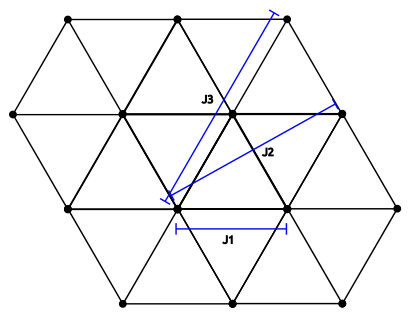
<figcaption class="paper-figure-caption"><b>Fig 1.</b> FIG. 1. Schematic illustrating the triangular crystal sym- metry at the core of our theoretical model. J1, J2, and J3 are the exchange interaction constants between first, second, and third nearest neighbor pairs, respectively.</figcaption>
</figure>
<figure class="paper-figure-card">
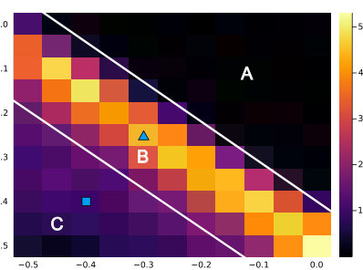
<figcaption class="paper-figure-caption"><b>Fig 2.</b> FIG. 2. Phase diagram illustrating the magnetic phase evo- lution as a function of the second and third nearest neighbor exchange interactions. The plot is calculated at Bz/J1 = 0.3 in the zero temperature limit. Phase A is a ferromagnetic phase. Phase B is a high skyrmion density phase, with mixed skyrmion types. Phase C is a helical phase, which features metastable skyrmions close to the boundary with phase B. Due to the presence of strong fluctuations between neighbor- ing phases, all phase boundaries (white lines) in this work are qualitatively defined and serve as guides to the eye. The blue triangle and square denote the coordinates at which the spin textures shown in Fig. 3(a) and...</figcaption>
</figure>
<figure class="paper-figure-card">
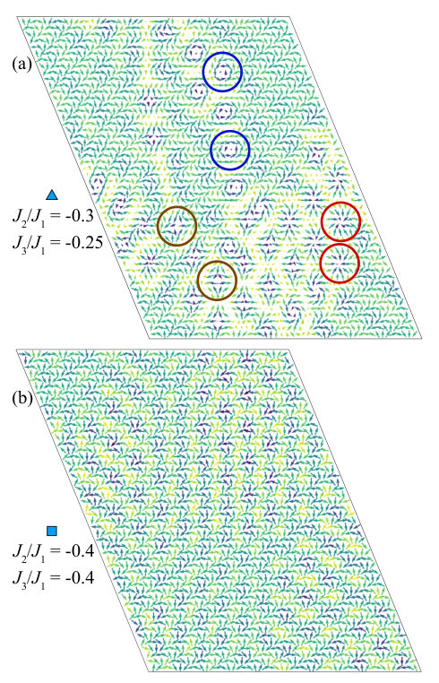
<figcaption class="paper-figure-caption"><b>Fig 3.</b> FIG. 3. Real-space spin textures evaluated at zero temper- ature, from the phase diagram shown in Fig. 2. (a) Phase B (high-density skyrmions), illustrating the mixture of dif- ferent skyrmion helicities and topological charges. The blue circles highlight several Bloch skyrmions, the red circles show N´eel skyrmions, and the brown circles indicate antiskyrmions. (Not all skyrmions are highlighted, to preserve clarity). (b) Phase C (helical phase). Bz/J1 is fixed at 0.3 for both phases.</figcaption>
</figure>
<figure class="paper-figure-card">
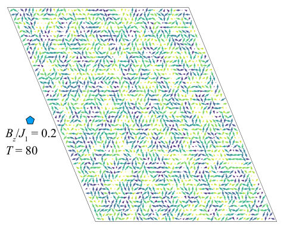
<figcaption class="paper-figure-caption"><b>Fig 4.</b> FIG. 5. Spin configuration in the high temperature param- agnetic phase (blue pentagon in Fig. 4), evaluated at J2/J1 = −0.3, J3/J1 = −0.25.</figcaption>
</figure>
<figure class="paper-figure-card">
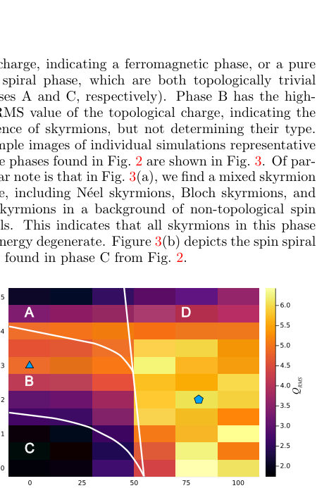
<figcaption class="paper-figure-caption"><b>Fig 5.</b> FIG. 4. Phase diagram illustrating the magnetic phase distribution as a function of temperature and perpendicular magnetic field. The plot is calculated at J2/J1 = −0.3 and J3/J1 = −0.25. Phase A is a ferromagnetic phase. Phase B is a high skyrmion density phase, with mixed skyrmion types. Phase C is a helical phase exhibiting metastable skyrmions close to the boundary with phase B. Phase D is a high tem- perature paramagnetic phase; its high topological charge orig- inates from short timescale chiral spin fluctuations. The ap- pearance of the high density skyrmion phase B is in good agreement with the phase diagram in Ref. [38]. The magnetic ordering in phases A and C is qualitatively...</figcaption>
</figure>
</div>

<p><strong>Summary.</strong> The research explores controlling magnetic skyrmions in centrosymmetric lattices by manipulating dipole-dipole interactions and external electric fields. Key findings include the ability of electric fields to continuously tune the skyrmion helicity, providing a mechanism for tuning qubits. This work advances the understanding of topological spin control crucial for next-generation quantum devices.</p>
<p><strong>Why it may be interesting.</strong> This work directly addresses fundamental control mechanisms (electric fields) over topological spin textures, which is highly relevant to developing robust quantum memory elements based on magnetic materials.</p>
<details>
<summary>Detailed structure</summary>
<p><strong>Main problem.</strong> The primary goal is establishing precise control over the helicity and spatial configuration of magnetic skyrmions for use in advanced computational applications.</p>
<p><strong>Main result.</strong> The study shows that electric fields can continuously tune the skyrmion helicity, offering a novel control handle for tuning two-level systems within skyrmion qubits. Furthermore, dipole-dipole interactions stabilize Bloch helicity and induce new lattice phases even at zero magnetic field.</p>
<p><strong>Method.</strong> Theoretical modeling using classical spin vector models solved via Monte Carlo simulations (Metropolis-Hastings algorithm) to map out phase diagrams.</p>
<p><strong>Model / system.</strong> The system is a skyrmion host on a triangular lattice, modeled by an extended Heisenberg Hamiltonian incorporating nearest-neighbor, next-nearest-neighbor, and third-nearest-neighbor exchange interactions. The model explicitly includes magnetic dipole-dipole interactions and external electric fields.</p>
<p><strong>Key observables.</strong> Topological charge (Q), Root Mean Square of the topological charge ($  ext{QRMS}$), and the balance between skyrmion/antiskyrmion populations ($ar{Q}/ ext{QRMS}$).</p>
<p><strong>Important parameters / regimes.</strong> Dipole-dipole coupling strength ($C$), external electric field strength, magnetic field ($B_z$), and lattice exchange couplings ($J_2, J_3$).</p>
<p><strong>Assumptions / limitations.</strong> The analysis is based on a classical spin vector model ($\mathbf{S}$), and phase boundaries are qualitatively defined due to strong thermal fluctuations.</p>
<p><strong>Figures summary.</strong> Figures illustrate the evolution of magnetic phases (Ferromagnetic, Skyrmion Crystal, Helical) across parameter space ($J_2$ vs $J_3$) and show real-space spin textures corresponding to different helicity types (Bloch vs. Néel).</p>
<p><strong>Paper structure.</strong> The paper systematically investigates the influence of dipole-dipole interactions on skyrmion stability, demonstrating phase transitions at zero field. It then analyzes how applied electric fields mediate a continuous transition between Bloch and Néel skyrmion states.</p>
</details>
<details>
<summary>Abstract</summary>
<p>Establishing precise control over the helicity and spatial configuration of magnetic skyrmions will be essential to realize their promise in classical, analog and quantum computation applications. In this work, we explore the role of magnetic dipole-dipole interactions, external electric fields, and magnetic fields in controlling these parameters within a triangular lattice centrosymmetric skyrmion host. We demonstrate that dipole-dipole interactions strongly favor Bloch helicity. Notably, a zero magnetic field skyrmion phase appears upon raising the dipole-dipole coupling strength, with substantial potential for cost-effective quantum device applications. We also report the emergence of a meron/antimeron lattice phase, in the absence of any Dzyaloshinskii-Moriya interaction. In contrast, applied electric fields stabilize high density Néel skyrmion crystals. The interplay between dipole-dipole interactions and external electric fields creates a continuous transition between the two skyrmion types, rather than an abrupt switch. Applied electric fields can therefore be used as a continuous tuning mechanism for skyrmion helicity, and hence a control handle for tuning two-level systems in skyrmion qubits.</p>
</details>
<p><sub><a href="#top">↑ back to top</a></sub></p>

<p><a id="paper-2607.05619"></a></p>
<h3 id="contractivity-of-the-hilbert-schmidt-speed-in-unital-quantum-channels-foundation-for-witnessing-non-markovianity-and-discriminating-unital-from-non-unital-markovian-dynamics"><a href="http://arxiv.org/abs/2607.05619v1">Contractivity of the Hilbert--Schmidt Speed in Unital Quantum Channels: Foundation for Witnessing Non-Markovianity and Discriminating Unital from Non-Unital Markovian Dynamics</a></h3>
<p><strong>Authors:</strong> Hossein Rangani Jahromi<br>
<strong>Type:</strong> theory · <strong>Category:</strong> other · <strong>PDF:</strong> <a href="https://arxiv.org/pdf/2607.05619v1">https://arxiv.org/pdf/2607.05619v1</a><br>
<strong>Analysis basis:</strong> full PDF text, analyzed in chunks
<strong>Topic relevance:</strong> <code>methods for driven-dissipative</code> <strong>3/5</strong> · <code>correlated / nonlocal dissipation</code> <strong>2/5</strong> · <code>non-equilibrium dynamics</code> <strong>2/5</strong> · <code>Keldysh / 2PI / non-Gaussian methods</code> <strong>1/5</strong> · <code>driven-dissipative phase transition</code> <strong>1/5</strong> · <code>entanglement &amp; information structure</code> <strong>1/5</strong></p>
<div class="figure-strip-hint">↔ Scroll figures horizontally</div>
<div class="paper-figures-scroll">
<figure class="paper-figure-card">
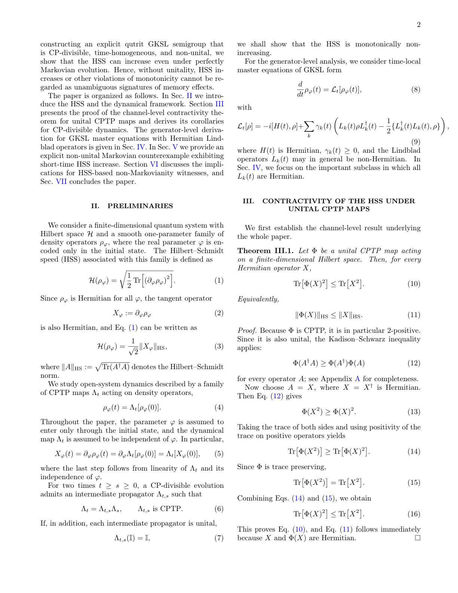
<figcaption class="paper-figure-caption"><b>Fig 1.</b> Low-resolution page preview, page 2</figcaption>
</figure>
<figure class="paper-figure-card">
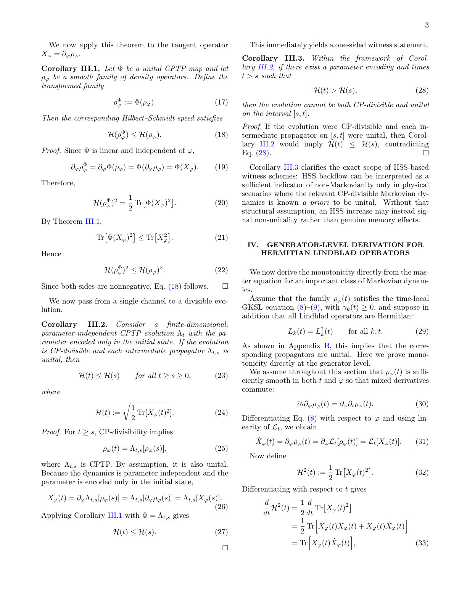
<figcaption class="paper-figure-caption"><b>Fig 2.</b> Low-resolution page preview, page 3</figcaption>
</figure>
<figure class="paper-figure-card">
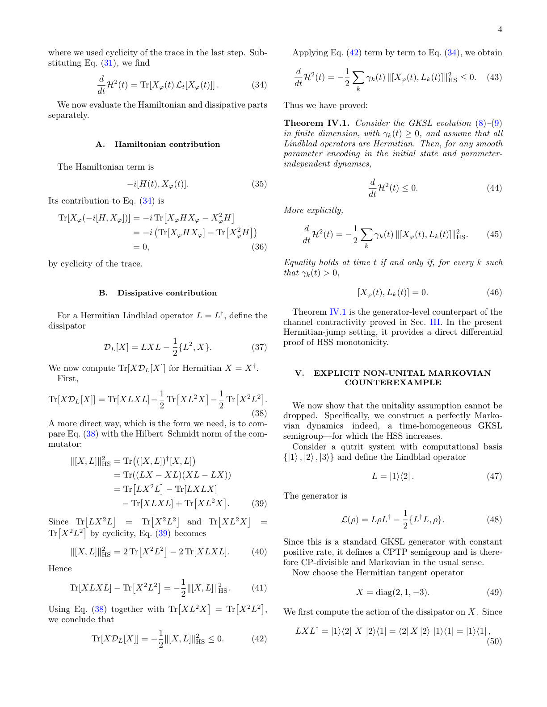
<figcaption class="paper-figure-caption"><b>Fig 3.</b> Low-resolution page preview, page 4</figcaption>
</figure>
<figure class="paper-figure-card">
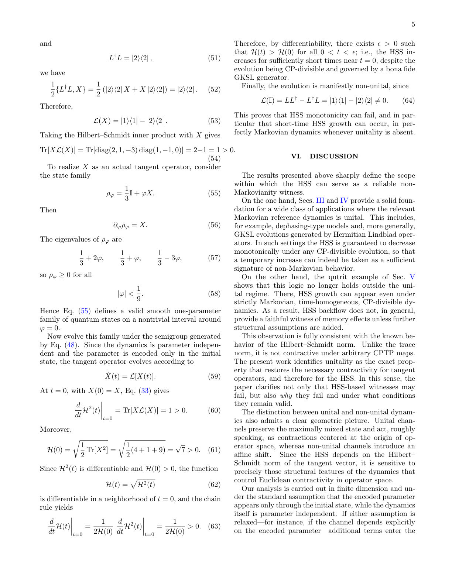
<figcaption class="paper-figure-caption"><b>Fig 4.</b> Low-resolution page preview, page 5</figcaption>
</figure>
<figure class="paper-figure-card">
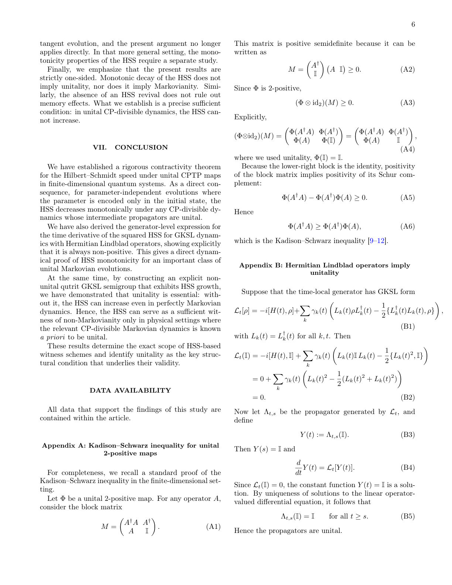
<figcaption class="paper-figure-caption"><b>Fig 5.</b> Low-resolution page preview, page 6</figcaption>
</figure>
</div>

<p><strong>Summary.</strong> This paper rigorously analyzes the Hilbert-Schmidt speed (HSS) as a diagnostic tool for non-Markovianity in open quantum systems. It proves that HSS decay is guaranteed only when the system's evolution channels are unital. Crucially, it demonstrates via counterexample that if the dynamics are not unital, HSS can increase even when the process remains perfectly Markovian.</p>
<p><strong>Why it may be interesting.</strong> This work provides a precise mathematical criterion—unitality—for using geometric measures like HSS backflow as reliable witnesses of memory effects in open quantum systems dynamics.</p>
<details>
<summary>Detailed structure</summary>
<p><strong>Main problem.</strong> The paper investigates the contractivity of the Hilbert-Schmidt speed (HSS) under open quantum system dynamics to establish a rigorous diagnostic tool for non-Markovianity.</p>
<p><strong>Main result.</strong> HSS is guaranteed to be monotonically non-increasing only if the underlying CPTP maps are unital; otherwise, HSS can increase even in perfectly Markovian dynamics.</p>
<p><strong>Method.</strong> The authors use geometric analysis on the space of quantum states, deriving differential equations for the time evolution of the squared HSS at both the channel and generator levels.</p>
<p><strong>Model / system.</strong> The study concerns open quantum systems evolving via CPTP maps or GKSL master equations. The dynamics are analyzed by parameterizing the initial state ($
ho_\varphi$) while keeping the map itself independent of $\varphi$.</p>
<p><strong>Key observables.</strong> Hilbert-Schmidt speed (HSS), $H(
ho_\varphi) = rac{1}{\sqrt{2}} \|\partial_\varphi 
ho_\varphi\|_{HS}$, and its time derivative.</p>
<p><strong>Important parameters / regimes.</strong> Unitality of the CPTP map ($\Lambda(I)=I$) is the crucial structural parameter determining HSS behavior.</p>
<p><strong>Assumptions / limitations.</strong> The analysis assumes that the parameter $\varphi$ enters only through the initial state, and for generator-level proofs, it requires Lindblad operators to be Hermitian.</p>
<p><strong>Figures summary.</strong> Not specified by notes; the structure relies on mathematical derivations (e.g., deriving $rac{d}{dt}H^2(t) \le 0$ or constructing a counterexample).</p>
<p><strong>Paper structure.</strong> The paper first proves HSS contractivity under unital CPTP maps, establishing monotonicity for divisible evolutions. It then extends this to the generator level for Hermitian Lindblad operators. Finally, it provides a qutrit counterexample demonstrating that non-unitality breaks the monotonic decay property.</p>
</details>
<details>
<summary>Abstract</summary>
<p>We investigate the Hilbert--Schmidt speed (HSS), a geometric indicator defined through the Hilbert--Schmidt norm of the tangent vector to a parametrized family of quantum states, under general open-system dynamics. Working in the framework of finite-dimensional, parameter-independent completely positive trace-preserving (CPTP) evolution where the parameter is encoded solely in the initial state, we prove that the HSS is contractive under every unital CPTP map. Consequently, for any CP-divisible evolution whose intermediate propagators are unital, the HSS is monotonically non-increasing in time. We then establish the generator-level counterpart for Markovian dynamics governed by a Gorini--Kossakowski--Sudarshan--Lindblad (GKSL) master equation with Hermitian Lindblad operators, deriving an explicit non-positive expression for the time derivative of the squared HSS. These results provide a rigorous foundation for using HSS backflow as a sufficient witness of non-Markovianity in physical settings where the relevant CP-divisible Markovian dynamics is known \emph{a priori} to be unital. Conversely, we show by an explicit qutrit counterexample that HSS can increase even in perfectly Markovian but non-unital dynamics, demonstrating that HSS non-monotonicity is not, in general, a faithful indicator of memory effects unless unitality is guaranteed. Our findings clarify the exact scope of HSS-based diagnostics and identify unitality as the crucial structural ingredient underlying their validity.</p>
</details>
<p><sub><a href="#top">↑ back to top</a></sub></p>

<p><a id="paper-2607.06460"></a></p>
<h3 id="correlation-of-maximum-superconducting-critical-temperature-with-copper-oxygen-energy-distance-and-oxygen-hole-content-in-the-emery-model"><a href="http://arxiv.org/abs/2607.06460v1">Correlation of maximum superconducting critical temperature with copper-oxygen energy distance and oxygen hole content in the Emery model</a></h3>
<p><strong>Authors:</strong> Eleanor M. O'Callaghan, Nicolas Kowalski, A. -M. S. Tremblay, Giovanni Sordi<br>
<strong>Type:</strong> theory · <strong>Category:</strong> strongly correlated electrons · <strong>PDF:</strong> <a href="https://arxiv.org/pdf/2607.06460v1">https://arxiv.org/pdf/2607.06460v1</a><br>
<strong>Analysis basis:</strong> full PDF text, analyzed in chunks
<strong>Topic relevance:</strong> <code>Keldysh / 2PI / non-Gaussian methods</code> <strong>3/5</strong> · <code>driven-dissipative phase transition</code> <strong>2/5</strong> · <code>methods for driven-dissipative</code> <strong>2/5</strong> · <code>Kondo &amp; dissipative impurity</code> <strong>1/5</strong> · <code>analog quantum simulation</code> <strong>1/5</strong> · <code>correlated cavity matter</code> <strong>1/5</strong></p>
<div class="figure-strip-hint">↔ Scroll figures horizontally</div>
<div class="paper-figures-scroll">
<figure class="paper-figure-card">
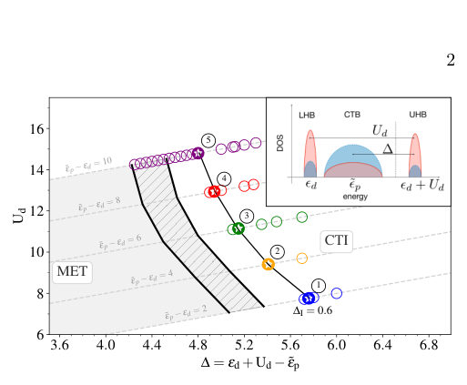
<figcaption class="paper-figure-caption"><b>Fig 1.</b> FIG. 1. Zaanen-Sawatzky-Allen diagram Ud vs ∆= ϵd +Ud − ˜ϵp for the Emery model. All data (circles) are at ntot = 5, i.e. δ = 0, and T = 1/50. The gray dashed lines indicate constant values of the bare Cu-O energy distance ˜ϵp −ϵd. The shaded gray area denotes the metallic state (MET). The unshaded area denotes the charge-transfer insulating state (CTI). The metal to insulator boundary is first-order and accompanied by hysteresis (hatched region within thick black lines). The thin black line indicates the contour of constant charge gap size ∆I = 0.6. Circles with star indicate the closest data points to that contour and are labeled by circled numbers. The super- conducting state emerging...</figcaption>
</figure>
<figure class="paper-figure-card">
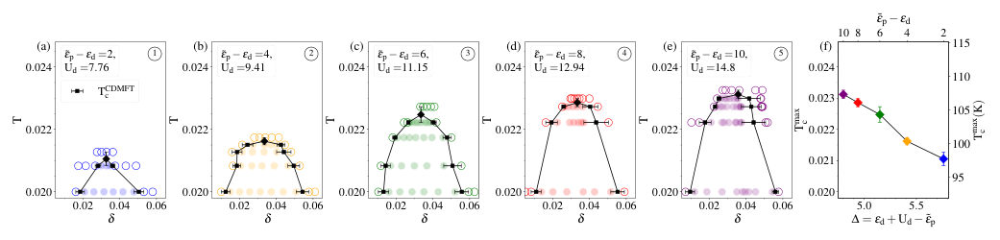
<figcaption class="paper-figure-caption"><b>Fig 2.</b> FIG. 2. (a)-(e) Superconducting temperature T CDMFT c (black line) versus hole doping δ = 5 −ntot. T CDMFT c (δ) is defined as the line where the superconducting order parameter changes from zero (open circles) to nonzero (shaded circles). The model parameters (˜ϵp −ϵd, Ud) are labeled and yield the same charge gap size ∆I = 0.6 in the parent (δ = 0) insulating state across all panels. These parameters are labeled by circled numbers that correspond to those in Fig. 1. (f) T max c versus bare charge-transfer energy ∆, or ˜ϵp −ϵd (secondary x axis), for the constant value of charge gap size ∆I = 0.6 in the undoped state. Temperature is converted into Kelvin using tpp = 0.4 eV.</figcaption>
</figure>
<figure class="paper-figure-card">
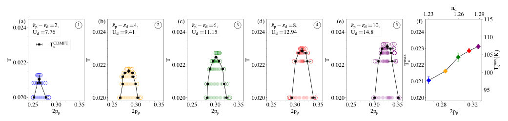
<figcaption class="paper-figure-caption"><b>Fig 3.</b> FIG. 3. (a)-(e) Same as Fig. 2, but using oxygen hole content 2pp instead of hole doping δ on the x-axis. (f) T max c versus its corresponding oxygen hole content 2pp, or copper occupancy nd (secondary x axis), for the constant charge gap size ∆I = 0.6 in the parent insulating state. Temperature is converted into Kelvin using tpp = 0.4 eV.</figcaption>
</figure>
</div>

<p><strong>Summary.</strong> This work uses the Emery model and CDMFT calculations to investigate what controls the maximum superconducting critical temperature in high-Tc cuprates. The key finding is that Tcmax increases with increasing the copper-oxygen energy distance, suggesting a mechanism for optimizing superconductivity by tuning orbital interactions. This provides new theoretical guidelines for understanding cuprate pairing.</p>
<p><strong>Why it may be interesting.</strong> While focused on cuprates, the use of advanced many-body techniques like CDMFT to map phase diagrams based on orbital energy differences provides valuable theoretical insight into how local electronic structure dictates macroscopic quantum phenomena.</p>
<details>
<summary>Detailed structure</summary>
<p><strong>Main problem.</strong> The primary goal is identifying microscopic parameters within the Emery model that optimize the maximum superconducting critical temperature (Tcmax) in cuprate superconductors.</p>
<p><strong>Main result.</strong> The study finds that Tcmax unexpectedly increases with increasing the copper-oxygen energy distance, suggesting new pathways for optimizing superconductivity beyond previous models.</p>
<p><strong>Method.</strong> Calculations utilize Cellular Dynamical Mean-Field Theory (CDMFT) at finite temperature to solve the cluster quantum impurity problem using Continuous-Time Quantum Monte Carlo (CT-HYB).</p>
<p><strong>Model / system.</strong> The research focuses on the Emery model, which describes electron hopping between Cu $3d_{x^2-y^2}$ and O $2p\alpha$ orbitals, relevant for cuprate superconductors. The analysis is performed within the framework of the Zaanen-Sawatzky-Allen charge-transfer diagram.</p>
<p><strong>Key observables.</strong> Superconducting critical temperature (Tcmax), charge gap size ($\Delta_I$), and doping level ($\delta$).</p>
<p><strong>Important parameters / regimes.</strong> Cu-O energy distance ($ ilde{\epsilon}_p - \epsilon_d$), onsite Coulomb repulsion ($U_d$), and fixed charge gap size ($\Delta_I = 0.6$ eV).</p>
<p><strong>Assumptions / limitations.</strong> The study assumes a fixed charge gap size ($\Delta_I$) and that the CDMFT result is representative, while acknowledging it neglects Kosterlitz-Thouless physics.</p>
<p><strong>Figures summary.</strong> Figures show Tc vs doping (dome shape), Tcmax vs bare charge-transfer energy ($    ilde{\epsilon}_p - \epsilon_d$), and Tcmax vs oxygen hole content ($2pp$), all demonstrating characteristic superconducting dome behavior.</p>
<p><strong>Paper structure.</strong> The paper systematically analyzes the dependence of Tcmax on various parameters—specifically $ ilde{\epsilon}_p - \epsilon_d$ and oxygen hole content—while keeping the charge gap size constant, mapping out optimal regimes in parameter space.</p>
</details>
<details>
<summary>Abstract</summary>
<p>Identifying microscopic parameters that optimize the maximum superconducting critical temperature $T_c^{\rm max}$ in the canonical model of the copper-oxygen plane of cuprates, the Emery model, remains challenging. Using cellular dynamical mean-field theory at finite temperature, we find that for a fixed charge gap size in the parent charge-transfer insulating state, $T_c^{\rm max}$ unexpectedly increases with increasing the copper-oxygen energy distance, as this favors the transfer of electrons from oxygen to copper orbitals. We show that these findings emerge naturally in the Zaanen-Sawatzky-Allen scheme and capture observed trends in hole-doped cuprates. Overall, our study uncovers that $T_c^{\rm max}$ is optimized in the Emery model under three conditions: upon doping a charge-transfer insulator, close to the charge-transfer insulator to metal boundary, and deep into the charge-transfer regime. This finding indicates new paths for optimizing $T_c^{\rm max}$.</p>
</details>
<p><sub><a href="#top">↑ back to top</a></sub></p>

<p><a id="paper-2607.05732"></a></p>
<h3 id="enhanced-phase-estimation-with-coherently-boosted-two-mode-squeezed-beams-and-its-application-to-optical-gyroscopes"><a href="http://arxiv.org/abs/2607.05732v1">Enhanced phase estimation with coherently boosted two-mode squeezed beams and its application to optical gyroscopes</a></h3>
<p><strong>Authors:</strong> Xiao-Qi Xiao, Elisha S. Matekole, Jiankang Zhao, Guihua Zeng, Jonathan P. Dowling, Hwang Lee<br>
<strong>Type:</strong> theory · <strong>Category:</strong> other · <strong>PDF:</strong> <a href="https://arxiv.org/pdf/2607.05732v1">https://arxiv.org/pdf/2607.05732v1</a><br>
<strong>Analysis basis:</strong> full PDF text, analyzed in chunks
<strong>Topic relevance:</strong> <code>interference shaping light</code> <strong>3/5</strong> · <code>quantum measurements</code> <strong>2/5</strong> · <code>Keldysh / 2PI / non-Gaussian methods</code> <strong>1/5</strong> · <code>correlated / nonlocal dissipation</code> <strong>1/5</strong> · <code>driven-dissipative phase transition</code> <strong>1/5</strong> · <code>entanglement &amp; information structure</code> <strong>1/5</strong> · <code>methods for driven-dissipative</code> <strong>1/5</strong></p>
<div class="figure-strip-hint">↔ Scroll figures horizontally</div>
<div class="paper-figures-scroll">
<figure class="paper-figure-card">
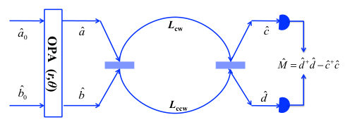
<figcaption class="paper-figure-caption"><b>Fig 1.</b> FIG. 1. The equivalent optical network diagram of the Sagnac interferometer for the coherent-boosted two-mode squeezed light field, where the first and second beam splitters are meant to be one and the same in the Sagnac interferometer. The two-mode squeezed light fields in ˆa and ˆb, which are gener- ated by the OPA (with the parameters r and θ), are injected into the gyroscope from the beam splitter. After traveling in the clockwise and counter-clockwise directions, respectively, the two light fields combine at the beam splitter again, and then leave the gyroscope. Then, immediately, the intensity difference ⟨ˆ M⟩between the two output fields is detected to estimate the phase difference...</figcaption>
</figure>
<figure class="paper-figure-card">
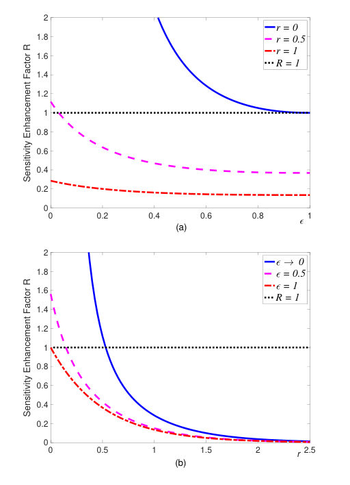
<figcaption class="paper-figure-caption"><b>Fig 2.</b> FIG. 2. For case II, the sensitivity enhancement factor R between the variance of the phase ∆φ2 and shot-noise limit ∆φ2 SN varies with (a) the parameter ϵ and (b) the parametric gain coefficient r. R = 1 (the black dot line) means the phase sensitivity reaches the shot-noise limit.</figcaption>
</figure>
<figure class="paper-figure-card">

<figcaption class="paper-figure-caption"><b>Fig 3.</b> Figure 2 describes the dependence of the enhance- ment factor R on ϵ and the parametric gain co- efficient r, respectively. When ϵ = 1, we have R = e−2r, which corresponds to case I. As shown in Fig. 2(a), with the decrease of the parameter ϵ, the factor R increases, which means the uncertainty of phase ∆φ increases and is generally close to or larger than the shot-noise limit ∆φSN. However, we notice that even in the case of ϵ →0, i.e., |α| ≫|β| (R → cosh 2r | sinh 2r|2 in this condition), the phase vari- ance below the shot-noise limit is also obtained if the parametric gain coefficient r satisfies the condi- tion cosh 2r/ sinh2 2r &lt; 1 [see Fig. 2(b)].</figcaption>
</figure>
<figure class="paper-figure-card">
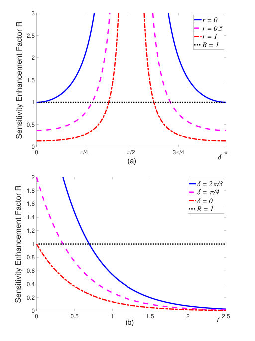
<figcaption class="paper-figure-caption"><b>Fig 4.</b> FIG. 3. For case III, the ratio R between the variance of the phase ∆φ2 and shot-noise limit ∆φ2 SN varies with (a) the parameter δ and (b) the parametric gain coefficient r . R = 1 (the black dot line) means the phase sensitivity reaches the shot-noise limit.</figcaption>
</figure>
<figure class="paper-figure-card">
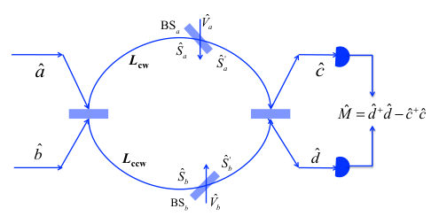
<figcaption class="paper-figure-caption"><b>Fig 5.</b> FIG. 4. The Sagnac interferometer in presence of loss in light propagation process, where the loss is modeled by the ficti- tious beam splitters.</figcaption>
</figure>
</div>

<p><strong>Summary.</strong> This paper presents a theoretical study on enhancing the sensitivity of optical gyroscopes by employing two-mode squeezed beams generated via OPA. The authors show that measuring the intensity difference allows for sub-shot-noise measurements, achieving phase sensitivities approaching the quantum Cramér-Rao bound. This demonstrates a robust quantum metrology technique applicable to high-precision sensing.</p>
<p><strong>Why it may be interesting.</strong> This work is highly relevant to quantum optics and open quantum systems, as it pushes measurement precision beyond classical limits using non-classical light states (squeezed beams) in a practical sensing platform like an optical gyroscope.</p>
<details>
<summary>Detailed structure</summary>
<p><strong>Main problem.</strong> The primary goal is to theoretically demonstrate a metrology method for improving the sensitivity of an interferometric optical gyroscope beyond the classical shot-noise limit while maintaining robustness against propagation loss.</p>
<p><strong>Main result.</strong> The proposed scheme achieves sub-shot-noise sensitivity, with the phase uncertainty approaching the quantum Cramér-Rao bound as the photon number increases. The enhancement factor relative to the shot-noise limit is analyzed in detail.</p>
<p><strong>Method.</strong> The analysis uses theoretical derivations based on intensity difference measurements ($\hat{M} = \hat{d}^\dagger \hat{d} - \hat{c}^\dagger \hat{c}$) applied to light sources generated via Optical Parametric Amplification (OPA) seeded by coherent inputs.</p>
<p><strong>Model / system.</strong> The system is an optical gyroscope implemented using a Sagnac interferometer setup. The quantum resource utilized is the two-mode squeezed beam, which is modeled as the output of an OPA process.</p>
<p><strong>Key observables.</strong> Phase shift ($\varphi = \mu - 
u$), phase uncertainty ($\Delta\varphi^2$), minimum detectable angular velocity ($\Omega_{\min}$), and the Noise Reduction Factor (NRF).</p>
<p><strong>Important parameters / regimes.</strong> Parametric gain ($r$), initial coherent field amplitudes ($\alpha, eta$), and propagation loss.</p>
<p><strong>Assumptions / limitations.</strong> The analysis relies on linear error propagation for uncertainty calculation and assumes specific approximations regarding the input coherent light fields in different cases (e.g., $\langle \hat{a} 
angle^2$, $\langle \hat{b} 
angle^2 \gg \sinh^2 r$).</p>
<p><strong>Figures summary.</strong> Figure 1 illustrates the optical network diagram for the Sagnac interferometer using coherent-boosted two-mode squeezed light. Other figures analyze the dependence of the enhancement factor ($R$) on parameters like gain ($r$) and phase difference ($\delta$).</p>
<p><strong>Paper structure.</strong> The paper develops the theoretical framework by modeling the OPA output, deriving the measurement observable $\hat{M}$, calculating the expected signal $\langle \hat{M} 
angle_E$, and finally determining the phase uncertainty $\Delta\varphi^2$ relative to the shot-noise limit across various input field configurations.</p>
</details>
<details>
<summary>Abstract</summary>
<p>Quantum techniques, developed in recent decades, provide new approaches to achieving high-precision measurements beyond the classical bounds. In this paper, we theoretically demonstrate a metrology method for improving the sensitivity of the interferometric optical gyroscope, robust against the loss, by using coherent-light stimulated two-mode squeezed beams as the light source. The detection protocol is based on a simple intensity measurement, and the quantum noise is far below the shot-noise limit. The enhancement factors for different coherent light fields are analyzed in detail. Additionally, the influence of loss during the propagation in the optical path is studied, and the conditions for achieving sub-shot-noise measurement sensitivity are obtained. We also find that the phase sensitivity of the proposed gyroscope scheme becomes closer to the quantum Cramér-Rao bound with increasing of the photon number of the coherent beams.</p>
</details>
<p><sub><a href="#top">↑ back to top</a></sub></p>

<p><a id="paper-2607.05858"></a></p>
<h3 id="local-moment-magnon-spectrum-in-conduction-electron-tunnelling"><a href="http://arxiv.org/abs/2607.05858v1">Local moment magnon spectrum in conduction electron tunnelling</a></h3>
<p><strong>Authors:</strong> Peter Thalmeier, Alireza Akbari<br>
<strong>Type:</strong> theory · <strong>Category:</strong> strongly correlated electrons · <strong>PDF:</strong> <a href="https://arxiv.org/pdf/2607.05858v1">https://arxiv.org/pdf/2607.05858v1</a><br>
<strong>Analysis basis:</strong> full PDF text, analyzed in chunks
<strong>Topic relevance:</strong> <code>Keldysh / 2PI / non-Gaussian methods</code> <strong>3/5</strong> · <code>spintronics-quantum-optics interface</code> <strong>3/5</strong> · <code>methods for driven-dissipative</code> <strong>2/5</strong> · <code>Kondo &amp; dissipative impurity</code> <strong>1/5</strong> · <code>exotic spin models in light-matter</code> <strong>1/5</strong></p>
<div class="figure-strip-hint">↔ Scroll figures horizontally</div>
<div class="paper-figures-scroll">
<figure class="paper-figure-card">
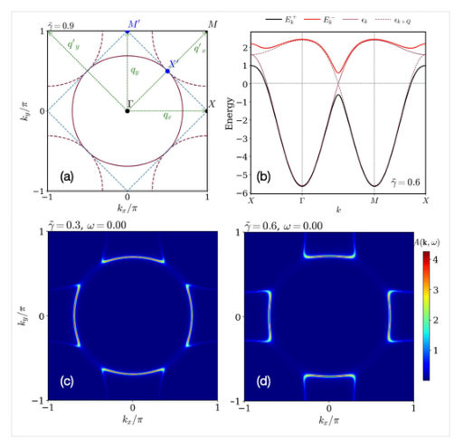
<figcaption class="paper-figure-caption"><b>Fig 1.</b> FIG. 1. (a) Fermi surface of bare (˜γ = 0) conduction band ϵk (Γ- centered) and shifted bands ϵk+Q (M-centered) which correspond to bare dispersion in (b). For finite ˜γ an AF gap opens at the crossing point X’ at the Fermi energy ϵF leading to reconstructed bands and their spectral functions (c,d) (for ω = ϵF ). The original BZ and antiferromagnetic BZ (AFBZ) correspond to full black and dashed blue lines in (a), with momentum coordinates (qx, qy) and (q′ x, q′ y), respectively, having symmetry points Γ (0,0), X(π, 0), M(π, π) and X′( π</figcaption>
</figure>
<figure class="paper-figure-card">
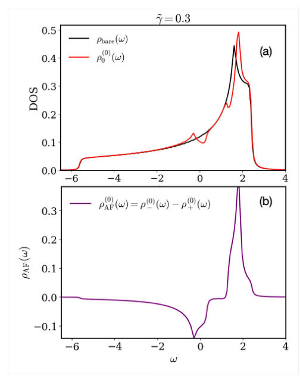
<figcaption class="paper-figure-caption"><b>Fig 2.</b> FIG. 2. (a) Normal k- integrated spectral function (DOS) in Eq. (21) for moderate (˜γ = 0.3) exchange coupling including only static band reconstruction setting Σ = 0. Black curve corresponds to bare band spectrum (˜γ = 0) for comparison. b) Anomalous spectral contribu- tion in Eqs. (17,21) induced at ±Q wave vectors by AF order param- eter. For larger ˜γ see Fig. 7.</figcaption>
</figure>
<figure class="paper-figure-card">
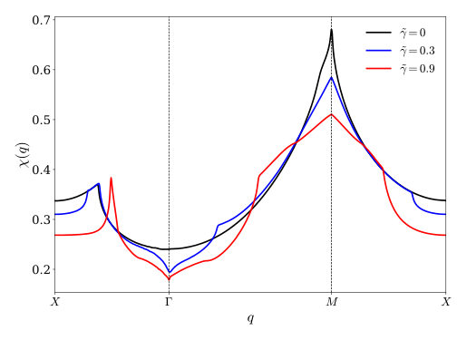
<figcaption class="paper-figure-caption"><b>Fig 3.</b> FIG. 3. Static susceptibility χ(q) for bare bands (˜γ = 0, black line) in the paramagnetic state with the maximum located at the M point corresponding to ordering vector Q=(π, π). In the AF ordered case with reconstructed conduction bands by nonzero ˜γ the maximum rests at Q but is progressively diminished due to the AF gap opening and corresponding suppressed nesting property (see Fig. 1).</figcaption>
</figure>
<figure class="paper-figure-card">
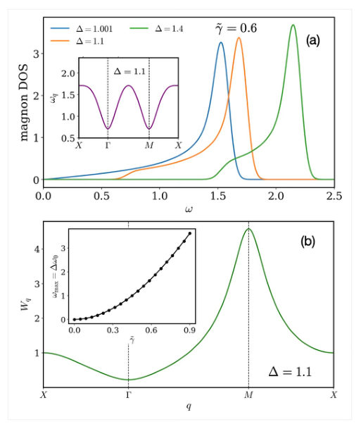
<figcaption class="paper-figure-caption"><b>Fig 4.</b> FIG. 4. (a) Inset shows the magnon dispersion in the original BZ for ˜γ = 0.6, ∆= 1.1 leading to |J| = I2 ex = 0.77χ(Q), ω0 = 1.54 and ωmax = ∆ω0 = 1.7. Main figure presents corresponding magnon DOS shifting progressively to higher energy with increasing ∆. (b) Coherence factor of electron-magnon interaction. It strongly peaks at the M-point where the magnon dispersion has its minimum with corresponding low DOS at this energy ω = ω0(∆2 −1) 1 2 . Note that the dispersion is periodic with ωq+Q = ωq while the coherence factor is not since Wq+Q = 1/Wq.</figcaption>
</figure>
<figure class="paper-figure-card">
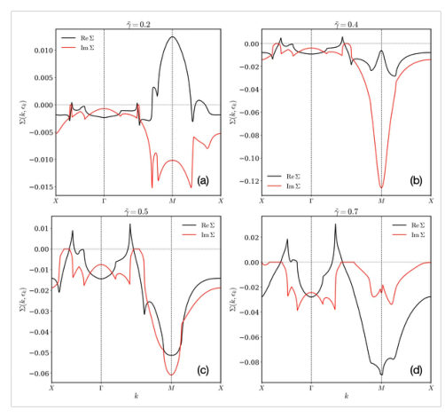
<figcaption class="paper-figure-caption"><b>Fig 5.</b> FIG. 5. Conduction electron self energies Σ(k, ϵk) along XΓMX BZ path (real and imaginary parts) caused by scattering from magnons according to Eq. (27) for weak, intermediate and strong exchange couplings. As ˜γ is increased a shift of weight from the M- point to the AF equivalent Γ -point is observed for the imaginary part and the real part at the M point changes sign.</figcaption>
</figure>
</div>

<p><strong>Summary.</strong> The paper theoretically investigates how conduction electrons tunnel through a material with localized antiferromagnetic moments. It distinguishes between spectral features caused by the static magnetic order and those arising dynamically from magnon excitations. By calculating electron self-energies due to magnon scattering, the authors predict that dynamic effects manifest as distinct 'sidebands' in the tunneling spectrum.</p>
<p><strong>Why it may be interesting.</strong> This work provides a concrete theoretical framework for interpreting spectroscopic measurements (like STM) in magnetically ordered materials by separating static magnetic effects from dynamic quantum fluctuations (magnons), which is crucial for understanding strongly correlated magnetism.</p>
<details>
<summary>Detailed structure</summary>
<p><strong>Main problem.</strong> The study investigates whether dynamic effects arising from local moment magnon excitations leave a distinct, measurable fingerprint on the conduction electron tunneling spectrum beyond the spectral changes caused by static magnetic ordering.</p>
<p><strong>Main result.</strong> Dynamic magnon scattering introduces characteristic 'sidebands' into the tunneling conductance spectrum via self-energy corrections, which must be accounted for when interpreting STM measurements of magnetically ordered materials.</p>
<p><strong>Method.</strong> The analysis employs Green's function techniques to calculate the conduction electron self-energy ($\Sigma$) due to coupling with magnons (derived from an XXZ model). This self-energy is then used to correct the spectral density of states, $
ho(\omega)$.</p>
<p><strong>Model / system.</strong> The system is a dual model comprising itinerant conduction electrons coupled via an on-site exchange interaction ($H_{ex}$) to localized spins exhibiting Antiferromagnetic (AF) order. The Hamiltonian includes terms for conduction electrons ($H_c$), magnons ($H_m$), and their coupling ($H_{cm}$).</p>
<p><strong>Key observables.</strong> Tunneling surface conductance ($rac{dI}{dV}$), which maps to the conduction electron Density of States (DOS); specifically, the appearance and magnitude of magnon sidebands relative to static reconstruction features.</p>
<p><strong>Important parameters / regimes.</strong> Exchange coupling strength ($I_{ex}$ or $    ilde{\gamma}$), anisotropy parameter ($\Delta$), and the magnon wave vector ($\mathbf{q}$).</p>
<p><strong>Assumptions / limitations.</strong> The calculations rely on perturbation theory (second order in $I_0$) for the self-energy, assuming slow variation of the tunneling matrix element with energy, and focusing on a simplified model system.</p>
<p><strong>Figures summary.</strong> Figures illustrate Fermi surface reconstruction due to static coupling ($\pm \mathbf{Q}$ gaps), the magnon dispersion relation ($\omega_{\mathbf{q}}$) dependence on anisotropy, and crucially, the spectral function $
ho(\omega)$ showing weight shifts from main peaks into distinct sidebands due to dynamic self-energy corrections.</p>
<p><strong>Paper structure.</strong> The paper first establishes the static picture (band reconstruction at $\pm \mathbf{Q}$), then introduces the full Hamiltonian including magnon dynamics. The core is the calculation of the electron self-energy ($\Sigma$) via magnon scattering, leading to renormalized quasiparticle bands and the prediction of sidebands in the tunneling spectrum.</p>
</details>
<details>
<summary>Abstract</summary>
<p>The surface tunnelling spectrum of a dual system consisting of localised moments with antiferromagnetic order coupled to conduction electrons by on-site exchange interaction is investigated. In the static approximation of the local moment order it is known that magnetic band reconstruction leads to an anomalous tunnelling spectrum at the magnetic ordering vector of local moments although the latter cannot contribute directly. In this work we consider dynamic effects by including the scattering of conduction electrons from the local moment magnon excitations. They lead to self energies and renormalisation of conduction states which in turn appreciably modify the tunnelling spectrum beyond the influence of static order, interpreted as the appearance of magnon sidebands.</p>
</details>
<p><sub><a href="#top">↑ back to top</a></sub></p>

<p><a id="paper-2607.05900"></a></p>
<h3 id="machine-learning-prediction-of-the-convergence-criterion-for-a-topological-invariant-of-finite-non-hermitian-chains"><a href="http://arxiv.org/abs/2607.05900v1">Machine learning prediction of the convergence criterion for a topological invariant of finite non-Hermitian chains</a></h3>
<p><strong>Authors:</strong> Raghav Chaturvedi, Viktor Könye, Ewelina M. Hankiewicz<br>
<strong>Type:</strong> theory · <strong>Category:</strong> disordered systems and neural networks · <strong>PDF:</strong> <a href="https://arxiv.org/pdf/2607.05900v1">https://arxiv.org/pdf/2607.05900v1</a><br>
<strong>Analysis basis:</strong> full PDF text, analyzed in chunks
<strong>Topic relevance:</strong> <code>methods for driven-dissipative</code> <strong>3/5</strong> · <code>Kondo &amp; dissipative impurity</code> <strong>2/5</strong> · <code>analog quantum simulation</code> <strong>2/5</strong> · <code>correlated / nonlocal dissipation</code> <strong>1/5</strong> · <code>driven-dissipative phase transition</code> <strong>1/5</strong> · <code>non-equilibrium dynamics</code> <strong>1/5</strong></p>
<div class="figure-strip-hint">↔ Scroll figures horizontally</div>
<div class="paper-figures-scroll">
<figure class="paper-figure-card">
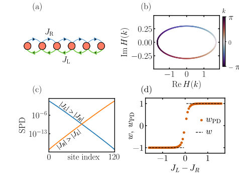
<figcaption class="paper-figure-caption"><b>Fig 1.</b> Figure 1. (a) Finite-size HN chain with asymmetric nearest- neighbor hoppings JR and JL. (b) Spectrum of the Bloch Hamiltonian H(k) [Eq. (8)] in the complex-energy plane. The color scale follows the momentum (k) across the Brillouin zone, tracing an ellipse. Here (JR, JL) = (1, 0.6). (c) Summed probability density (SPD) of the open chain plotted on a log-linear scale against the site index. The non-Hermitian skin effect occurs at opposite boundaries for |JL| &gt; |JR| and |JR| &gt; |JL|. (d) Real-space polar-decomposition invariant wPD across the topological phase transition compared with the exact clean winding number w. Here ℓ= 10 and the chain length is N = 120.</figcaption>
</figure>
<figure class="paper-figure-card">
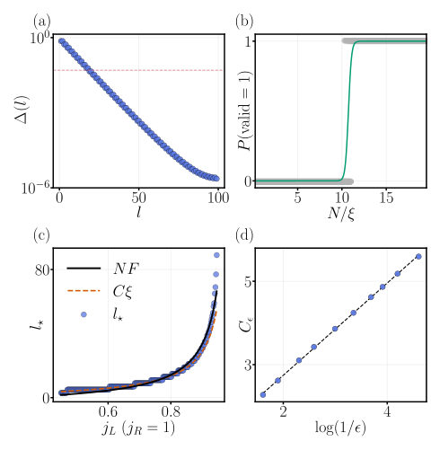
<figcaption class="paper-figure-caption"><b>Fig 2.</b> Figure 2. (a) Convergence of the real-space polar- decomposition invariant with boundary crop-length ℓ. The plotted quantity is ∆(ℓ) = |wPD(ℓ) −w|, where w is the clean momentum-space winding. The horizontal dashed line marks the tolerance ϵ = 0.05. (b) Binary valid-crop labels as a func- tion of the scaling variable x = N/ξ. Grey points show the raw valid/invalid labels, and the green curve shows the one- feature logistic fit Pvalid(x). (c) Fixed-size crop-length ℓ⋆as a function of JL for JR = 1 and N = 200. Blue points de- note numerical values, the black curve shows the finite-size fit ℓ⋆= NF(x) with F(x) = a/(x + b) + c, and the orange dashed curve shows the asymptotic guide ℓ⋆= Cϵξ....</figcaption>
</figure>
<figure class="paper-figure-card">

<figcaption class="paper-figure-caption"><b>Fig 3.</b> Figure 3. (a) Complex spectrum of Hm(k) for m = 2. The spectrum is an ellipse in the complex-energy plane, but it winds two times around the base point EB = 0. (b-d) Real- space polar-decomposition invariant wPD across the point-gap transition for m = 2, 3, 4, compared with the exact clean winding w.</figcaption>
</figure>
<figure class="paper-figure-card">

<figcaption class="paper-figure-caption"><b>Fig 4.</b> Figure 4. (a) One-feature logistic fits for the valid-crop classification problem for m = 1, 2, 3, 4, plotted against xm = N/ξm. Filled circles indicate the fitted Pvalid = 1/2 threshold points. (b-d) Integer crop-length ℓ⋆as a func- tion of JL for m = 2, 3, 4, with JR = 1. The displayed cuts use (m, N) = (2, 320), (3, 480), (4, 640). Blue points are the numerical values of ℓ⋆. The orange dashed curves show ℓcont ⋆ = Cϵξm. The black curves show ℓcont ⋆ = NF(xm), with F(xm) = a/(xm + b) + c. Integer predictions are obtained by rounding the continuous curves.</figcaption>
</figure>
<figure class="paper-figure-card">

<figcaption class="paper-figure-caption"><b>Fig 5.</b> Figure 5. (a) Schematic of the open chain with first- and second-neighbor non-reciprocal hoppings. (b-c) Point-gapped spectral loops of the Bloch Hamiltonian in the complex-energy plane. The black point marks the base energy EB = 0. The winding number w is computed from the phase winding of H(k) (see Eq. (46) and Eq. (1)) around this base point.</figcaption>
</figure>
</div>

<p><strong>Summary.</strong> This paper introduces a machine learning approach to solve the practical problem of determining the correct 'crop-length' needed for calculating topological invariants in finite non-Hermitian quantum chains. By training Random Forest models on system parameters, the authors successfully predict this convergence criterion, demonstrating that it is governed by the underlying physical decay lengths associated with the non-Hermitian skin effect.</p>
<p><strong>Why it may be interesting.</strong> This work bridges advanced condensed matter topology (non-Hermitian physics) with modern data science techniques. For AMO/open systems, understanding how finite boundaries or measurement limitations affect bulk topological properties is crucial, making the ML prediction of $\ell^\star$ highly relevant for experimental interpretation.</p>
<details>
<summary>Detailed structure</summary>
<p><strong>Main problem.</strong> The primary goal is to develop a practical, physically interpretable method to determine the necessary 'crop-length parameter' ($\ell$) for a real-space topological invariant in finite non-Hermitian chains.</p>
<p><strong>Main result.</strong> Machine learning models (Random Forest) can accurately predict this required crop-length ($\ell^\star$), showing that it is fundamentally controlled by physical decay lengths associated with the non-Hermitian skin effect.</p>
<p><strong>Method.</strong> The authors employ Random Forest regression and classification, training ML predictors on system parameters to automate the selection of $\ell$ needed for convergence.</p>
<p><strong>Model / system.</strong> The study analyzes finite one-dimensional non-Hermitian chains, including Hatano-Nelson type models (nearest-neighbor) and general $m$-hop hopping systems. The topology is diagnosed using a real-space invariant derived from the polar decomposition of the Hamiltonian matrix.</p>
<p><strong>Key observables.</strong> Topological Invariant ($w_{PD}(\ell)$), clean momentum-space winding number ($w$), required crop-length ($\ell^\star$), and localization/decay lengths ($\xi, \xi_m$).</p>
<p><strong>Important parameters / regimes.</strong> Non-reciprocity parameters ($J_R, J_L$), system size ($N$), disorder strength ($r_W$), and the ratio $x = N/\xi$.</p>
<p><strong>Assumptions / limitations.</strong> The convergence of the real-space invariant is assumed to be governed by physical decay lengths ($\xi$ or $\xi_m$) derived from the spectral properties.</p>
<p><strong>Figures summary.</strong> Figures illustrate the non-Hermitian skin effect, the comparison between $w_{PD}$ and $w$, and show how ML predictions generalize across phase diagrams and under disorder.</p>
<p><strong>Paper structure.</strong> The paper first establishes the physical problem of finite-size effects in topological invariants. It then develops an ML framework using decay lengths as key features to predict the convergence parameter $\ell^\star$. Finally, it validates this approach by testing generalization and stability under disorder for various hopping models.</p>
</details>
<details>
<summary>Abstract</summary>
<p>A topological invariant based on polar-decomposition of matrices correctly captures the topology of finite non-Hermitian chains exhibiting the non-Hermitian skin effect, provided that an appropriate crop-length parameter is chosen. This parameter, which sets the cutoff used in the calculation of the invariant, is usually chosen empirically and becomes especially important near topological phase transitions, where finite-size effects are strongest. Here we show that the required crop-length is controlled by physical decay (localization) lengths. For nearest-neighbor and pure longer-range hopping Hatano-Nelson-type chains, the crop-length is set mainly by a single localization length and is well approximated by a scalar multiple of that length. For more general longer-range hopping models, it is governed instead by a multichannel root structure of the characteristic polynomial. Random-forest regression captures finite-size and near-boundary corrections while preserving this decay-length interpretation. Trained on one set of Hamiltonians, the predictor accurately generalizes to unseen Hamiltonians and complex base energies, reproducing crop-lengths across full phase diagrams. We further show that the predictions learned from clean nearest-neighbor hopping chains remain stable under moderate hopping disorder. These results provide a practical and physically interpretable way to choose the crop-length, which in turn determines when the real-space invariant can reliably capture the topology of finite non-Hermitian chains.</p>
</details>
<p><sub><a href="#top">↑ back to top</a></sub></p>

<p><a id="paper-2607.06106"></a></p>
<h3 id="weak-coupling-altermagnetism-and-chiral-magnetic-excitations-in-a-checkerboard-lattice"><a href="http://arxiv.org/abs/2607.06106v1">Weak-coupling altermagnetism and chiral magnetic excitations in a checkerboard lattice</a></h3>
<p><strong>Authors:</strong> Abhigya Rangari, Manna Paul, Sayandip Ghosh<br>
<strong>Type:</strong> theory · <strong>Category:</strong> strongly correlated electrons · <strong>PDF:</strong> <a href="https://arxiv.org/pdf/2607.06106v1">https://arxiv.org/pdf/2607.06106v1</a><br>
<strong>Analysis basis:</strong> full PDF text, analyzed in chunks
<strong>Topic relevance:</strong> <code>analog quantum simulation</code> <strong>3/5</strong> · <code>exotic spin models in light-matter</code> <strong>3/5</strong> · <code>spintronics-quantum-optics interface</code> <strong>3/5</strong> · <code>Keldysh / 2PI / non-Gaussian methods</code> <strong>1/5</strong></p>
<div class="figure-strip-hint">↔ Scroll figures horizontally</div>
<div class="paper-figures-scroll">
<figure class="paper-figure-card">

<figcaption class="paper-figure-caption"><b>Fig 1.</b> FIG. 1: The checkerboard lattice with sublattices A and B marked by red and blue circles, respectively (left panel). The shaded area denotes the unit cell. The oper- ation of time-reversal and C4 real-space rotation around the plaquette center (gray circle) converts it to the dual lattice in the right panel. The lattice constant is taken to be unity.</figcaption>
</figure>
<figure class="paper-figure-card">

<figcaption class="paper-figure-caption"><b>Fig 2.</b> FIG. 2: (a) The static bare altermagnetic susceptibil- ity χAM,(0)(q) vs q. (b) The static bare and RPA sus- ceptibilities in the spin and altermagnetic channels for U = 1.5 and T = 0.01 along BZ symmetry directions (0, 0) →(π, 0) →(π, π) →(0, 0) →(0, π) →(π, π). Note the differing vertical scales.</figcaption>
</figure>
<figure class="paper-figure-card">

<figcaption class="paper-figure-caption"><b>Fig 3.</b> FIG. 3: The order parameter (red) and exchange field (blue) at half-filling from the self-consistent Hartree-Fock calculation, showing normal semimetal (NSM), altermag- netic semimetal (AMSM), and altermagnetic insulator (AMI) phases.</figcaption>
</figure>
<figure class="paper-figure-card">

<figcaption class="paper-figure-caption"><b>Fig 4.</b> FIG. 4: Spin-resolved band structure from Eq. (2) for U = 0 (a), U = 2.5 (b), U = 3.0 (c), and U = 3.5 (d) with solid red and dashed blue lines denoting ↑and ↓- spins, respectively.</figcaption>
</figure>
<figure class="paper-figure-card">

<figcaption class="paper-figure-caption"><b>Fig 5.</b> FIG. 5: Imaginary part of RPA transverse susceptibilities (χ+−in the left panel and χ−+ in the right panel) for U = 3.0 (a)-(b), U = 4.0 (c)-(d), and U = 5.0 (e)-(f).</figcaption>
</figure>
</div>

<p><strong>Summary.</strong> This work theoretically explores altermagnetism in a checkerboard lattice using the Hubbard model. By analyzing susceptibility divergences and performing RPA calculations, the authors map out phase transitions to novel magnetic states. The key finding is the observation of chirality-dependent magnon excitations that confirm the unique nature of altermagnetic order.</p>
<p><strong>Why it may be interesting.</strong> While focused on magnetism, the study of spin excitations (magnons) derived from Hubbard models provides insights into collective quantum dynamics that can be relevant for understanding strongly correlated quantum materials studied in AMO physics or condensed matter theory.</p>
<details>
<summary>Detailed structure</summary>
<p><strong>Main problem.</strong> The study investigates weak-coupling altermagnetism and the associated chiral magnetic excitations within a checkerboard lattice structure.</p>
<p><strong>Main result.</strong> The research predicts phase transitions from nonmagnetic to altermagnetic semimetal and insulating phases, showing that magnetic excitations exhibit a characteristic alternating chirality splitting mirroring the electronic band splitting.</p>
<p><strong>Method.</strong> Theoretical calculations employing mean-field treatments of the Hubbard repulsion combined with Random-Phase Approximation (RPA) for analyzing dynamical spin susceptibilities.</p>
<p><strong>Model / system.</strong> The system is modeled using a minimal one-band Hubbard model applied to electrons on a checkerboard lattice. The analysis explores how electron interactions drive the material into an altermagnetic state characterized by spin-split bands.</p>
<p><strong>Key observables.</strong> Altermagnetic susceptibility ($\chi_{AM}$), spin susceptibility ($\chi_S$), electronic band structure ($E_\pm(\mathbf{k})$), and magnon excitation spectra ($   ext{Im}(\chi)$).</p>
<p><strong>Important parameters / regimes.</strong> Interaction strength ($U$) relative to hopping parameters ($t_1, t_2, t_3$); filling level (half-filling).</p>
<p><strong>Assumptions / limitations.</strong> The analysis is conducted within a weak-coupling framework and relies on the Random-Phase Approximation (RPA) for excitations.</p>
<p><strong>Figures summary.</strong> Figures illustrate the lattice structure, static and RPA susceptibilities ($\chi_{AM}$ vs $\mathbf{q}$), phase diagrams showing transitions between different magnetic/electronic phases, spin-resolved band structures, and magnon spectral functions ($   ext{Im}(\chi)$).</p>
<p><strong>Paper structure.</strong> The paper proceeds by establishing the model on the checkerboard lattice, using mean-field theory to map out phase transitions based on $U$, and finally applying RPA techniques to calculate the magnetic excitation spectra in the resulting altermagnetic phases.</p>
</details>
<details>
<summary>Abstract</summary>
<p>Altermagnets, characterized by spin-split electronic bands with compensated magnetic moments, have emerged as a new class of magnetic materials garnering attention in recent years. Here, using a minimal one-band Hubbard model, we show that the checkerboard lattice serves as a natural platform for altermagnetism for electrons. The instability towards altermagnetic order is denoted by diverging altermagnetic susceptibility at weak-coupling. Carrying out mean-field treatment of the Hubbard repulsion, we show phase transitions from the nonmagnetic to altermagnetic semimetal and then to altermagnetic insulating phase, allowing clear identification of spin-split states. We then examine magnetic excitations in the altermagnetic phases using a random-phase approximation treatment of the dynamical spin susceptibility. The altermagnetic order is found to be stable against spin-fluctuations with the excitation spectra showing well-defined magnon excitations, which decay into single-particle excitations with decreasing interaction strength. Remarkably, the magnetic excitations exhibit strong dependence on both chirality and direction, showing an alternating chirality splitting, similar to the alternating spin splitting of the electronic bands, which serves as a salient feature of altermagnetism.</p>
</details>
<p><sub><a href="#top">↑ back to top</a></sub></p>

<p><a id="paper-2607.06557"></a></p>
<h3 id="quantum-channel-polynomial-processing"><a href="http://arxiv.org/abs/2607.06557v1">Quantum Channel Polynomial Processing</a></h3>
<p><strong>Authors:</strong> Tianhan Liu, Fedor Simkovic, Martin Leib<br>
<strong>Type:</strong> theory · <strong>Category:</strong> quantum information and computing · <strong>PDF:</strong> <a href="https://arxiv.org/pdf/2607.06557v1">https://arxiv.org/pdf/2607.06557v1</a><br>
<strong>Analysis basis:</strong> full PDF text, analyzed in chunks
<strong>Topic relevance:</strong> <code>analog quantum simulation</code> <strong>3/5</strong> · <code>correlated / nonlocal dissipation</code> <strong>1/5</strong> · <code>correlated cavity matter</code> <strong>1/5</strong> · <code>driven-dissipative phase transition</code> <strong>1/5</strong> · <code>entanglement &amp; information structure</code> <strong>1/5</strong> · <code>methods for driven-dissipative</code> <strong>1/5</strong> · <code>non-equilibrium dynamics</code> <strong>1/5</strong></p>
<div class="figure-strip-hint">↔ Scroll figures horizontally</div>
<div class="paper-figures-scroll">
<figure class="paper-figure-card">

<figcaption class="paper-figure-caption"><b>Fig 1.</b> FIG. 1. Workflow of the Quantum Channel Polynomial Pro- cessing (QCPP) method: (1) A target function f is interpo- lated by a order-d polynomial p. (2) The basic computational building block of QCPP then corresponds to stochastically sampling unitary circuits, c.f. (3) Every basic computational building block corresponds to a root of the interpolating poly- nomial. To encode the entire polynomial one needs to con- catenate d basic computational building blocks probabilities to construct the channel M (4) Channel M needs to repeated twice with interleaved application of a X gate on the ancilla qubit. (5) Measurements on the computational register in- formed by the measurement result on the...</figcaption>
</figure>
</div>

<p><strong>Summary.</strong> The paper introduces Quantum Channel Polynomial Processing (QCPP), an algorithm designed to implement functions of Hermitian operators on quantum states. By replacing complex coherent unitaries with stochastic probabilistic mixtures, QCPP significantly simplifies the circuit requirements compared to existing techniques like QSVT. This advancement makes simulating complex Hamiltonians more feasible for near-term and intermediate-scale quantum hardware.</p>
<p><strong>Why it may be interesting.</strong> This work directly addresses algorithmic efficiency in quantum simulation, offering a hardware-friendly alternative to complex unitary encodings required by standard QSVT methods for simulating Hamiltonians relevant to AMO physics.</p>
<details>
<summary>Detailed structure</summary>
<p><strong>Main problem.</strong> Developing a quantum algorithmic framework to efficiently apply arbitrary functions of Hermitian operators, $f(H)
ho f(H)^\dagger$, on an initial quantum state.</p>
<p><strong>Main result.</strong> The proposed Quantum Channel Polynomial Processing (QCPP) method achieves a favorable tradeoff between sample and query complexity, allowing for polynomial sample scaling with respect to the required precision.</p>
<p><strong>Method.</strong> QCPP replaces coherent block encoding used in QSVT with stochastic encodings of Hamiltonian commutators/anti-commutators at the channel level, utilizing probabilistic mixtures of unitary channels.</p>
<p><strong>Model / system.</strong> The framework operates on an n-qubit computational register and one ancillary qubit. The target process approximates applying a function $f$ to a Hermitian operator $H$, which is constructed from Pauli operators.</p>
<p><strong>Key observables.</strong> Sample Complexity ($\Gamma(p)$), Query Complexity ($d$), and the resulting quantum channel $\mathcal{F}$.</p>
<p><strong>Important parameters / regimes.</strong> The tradeoff between sample complexity (related to polynomial coefficients) and query complexity (number of basic blocks $d$).</p>
<p><strong>Assumptions / limitations.</strong> It assumes the ability to implement the probabilistic building block $E$, and it relies on polynomial interpolation techniques for approximating the target function $f$.</p>
<p><strong>Figures summary.</strong> Figure 1 illustrates the workflow: polynomial interpolation, construction of the basic computational building block via stochastic sampling, concatenation of blocks corresponding to roots, and the final measurement sequence.</p>
<p><strong>Paper structure.</strong> The paper builds from defining the problem (applying $f(H)$) to introducing QCPP as a replacement for QSVT's coherent encoding. It details the mathematical structure using probabilistic mixtures and analyzes the resulting complexity trade-offs by constructing specific polynomials that yield polynomial sample scaling.</p>
</details>
<details>
<summary>Abstract</summary>
<p>We introduce a quantum algorithmic framework based on probabilistic mixtures of unitary channels that, similar to the framework of quantum singular value transformations, enables the application of arbitrary polynomials of hermitian operators onto arbitrary initial states. We show that our framework supports a flexible tradeoff between sample- and query complexity ranging from optimal query complexity, meaning logarithmic in the error, and exponentially scaling sample complexity to sub-polynomial query complexity in the error and polynomial sample complexity. Combined with the considerably lower quantum circuit complexity, compared to quantum singular value transformations with a linear combination of unitaries block encoding, we argue that our framework can be seamlessly scaled from NISQ to fault-tolerant quantum computing.</p>
</details>
<p><sub><a href="#top">↑ back to top</a></sub></p>

<p><a id="paper-2607.05661"></a></p>
<h3 id="interplay-between-quantum-coherence-and-multiparameter-quantum-estimation-in-graphene"><a href="http://arxiv.org/abs/2607.05661v1">Interplay Between Quantum Coherence and Multiparameter Quantum Estimation in Graphene</a></h3>
<p><strong>Authors:</strong> Younes Moqine, Brahim Adnane, Abdelilah El Rhazali, and Rachid Houça<br>
<strong>Type:</strong> theory · <strong>Category:</strong> other · <strong>PDF:</strong> <a href="https://arxiv.org/pdf/2607.05661v1">https://arxiv.org/pdf/2607.05661v1</a><br>
<strong>Analysis basis:</strong> full PDF text, analyzed in chunks
<strong>Topic relevance:</strong> <code>quantum measurements</code> <strong>3/5</strong> · <code>Keldysh / 2PI / non-Gaussian methods</code> <strong>1/5</strong> · <code>analog quantum simulation</code> <strong>1/5</strong> · <code>entanglement &amp; information structure</code> <strong>1/5</strong> · <code>measurement-induced transitions</code> <strong>1/5</strong></p>
<div class="figure-strip-hint">↔ Scroll figures horizontally</div>
<div class="paper-figures-scroll">
<figure class="paper-figure-card">

<figcaption class="paper-figure-caption"><b>Fig 1.</b> Figure 1 – Temperature dependence of quantum coherence and minimum estimation variance for different values of the wave vector kx, with kz = 1.</figcaption>
</figure>
<figure class="paper-figure-card">

<figcaption class="paper-figure-caption"><b>Fig 2.</b> Figure 2 – Quantum coherence and minimum estimation variance in terms of the wave vector kx for different values of the temperature T, with kz = 1.</figcaption>
</figure>
<figure class="paper-figure-card">

<figcaption class="paper-figure-caption"><b>Fig 3.</b> Figure 3 – Temperature dependence of quantum coherence C and the individual minimum estimation variance Varind min(T) for different values of the wave vector kx, with kz = 1.</figcaption>
</figure>
<figure class="paper-figure-card">

<figcaption class="paper-figure-caption"><b>Fig 4.</b> Figure 4 – Wave-vector dependence of quantum coherence C and the minimum variance Varmin ind (kx) in the independent estimation scheme for different values of the temperature T.</figcaption>
</figure>
<figure class="paper-figure-card">

<figcaption class="paper-figure-caption"><b>Fig 5.</b> Figure 4 illustrates the dependence of the quantum coherence C and the minimum variance Varind min(kx) on the wave vector kx for different values of the temperature T. As shown in the left panel, the coherence reaches its maximum around kx = 0, indicating that the system preserves stronger quantum coherence in the low-wave-vector region. When |kx| increases, the coherence gradually decreases, showing that large values of the wave vector weaken the quantum superposition properties of the system. Moreover, increasing the temperature reduces the maximum value of coherence. The highest coherence is obtained for the lowest temperature, while higher temperatures lead to a progressive suppression...</figcaption>
</figure>
</div>

<p><strong>Summary.</strong> This theoretical study examines the interplay between quantum coherence and the precision limits of estimating temperature and wave vector in a graphene system. Using the Quantum Fisher Information Matrix, the authors find that while coherence peaks near $k_x=0$, the best estimation precision requires considering parameter correlations via a ratio $\Gamma$. The results highlight that optimal metrology depends on more than just maximizing quantum coherence.</p>
<p><strong>Why it may be interesting.</strong> This work bridges quantum metrology (a key area in quantum information) with condensed matter physics by applying advanced estimation theory to the electronic properties of graphene, showing that resource quantification (coherence) is not sufficient for optimal measurement design.</p>
<details>
<summary>Detailed structure</summary>
<p><strong>Main problem.</strong> The study investigates how quantum coherence influences the precision achievable when estimating multiple physical parameters, specifically temperature (T) and wave vector ($k_x$), in a graphene system.</p>
<p><strong>Main result.</strong> Optimal estimation precision does not necessarily coincide with regions of maximal quantum coherence; furthermore, the relationship between independent versus simultaneous estimation strategies is quantified by a ratio $\Gamma$.</p>
<p><strong>Method.</strong> The analysis employs the Quantum Fisher Information Matrix (QFIM) and the quantum Cramér–Rao bound to establish lower limits on parameter uncertainty for both joint and separate estimations.</p>
<p><strong>Model / system.</strong> The system modeled is graphene, treated using an effective Dirac-like Hamiltonian. The thermal state density matrix $
ho$ is derived based on this Hamiltonian, which depends on $k_x$ and $T$.</p>
<p><strong>Key observables.</strong> Quantum coherence ($C_{\ell_1}$), minimum variances ($  ext{Var}<em _min="\min">{\min}(T)$, $  ext{Var}</em>(k_x)$), and the comparison ratio $\Gamma$.</p>
<p><strong>Important parameters / regimes.</strong> Temperature ($T$) and wave vector component ($k_x$). Key regimes include low temperatures and $k_x \approx 0$.</p>
<p><strong>Assumptions / limitations.</strong> The analysis uses the $\ell_1$-norm for coherence, which is basis-dependent. It also notes that while the bound can be calculated, attainability depends on specific commutation relations between derived operators.</p>
<p><strong>Figures summary.</strong> Figures illustrate the dependence of coherence and minimum variance on $k_x$ (for fixed $T$) and the ratio $\Gamma$ as a function of both $k_x$ and $T$.</p>
<p><strong>Paper structure.</strong> The paper first defines the physical model and quantifies coherence. It then develops the theoretical framework using QFIM for multiparameter estimation, calculating bounds for independent and simultaneous schemes. Finally, it analyzes how coherence relates to these minimum variances across different parameter regimes.</p>
</details>
<details>
<summary>Abstract</summary>
<p>In this work, we investigate the relationship between quantum coherence and multiparameter quantum estimation in a graphene-based system. We focus on the estimation of two relevant physical parameters, namely the temperature $T$ and the wave vector $k_x$, and analyze how their variations affect both quantum coherence and the achievable metrological precision. The minimum variances associated with the estimation process are evaluated through the quantum Cramér--Rao bound within both simultaneous and independent estimation schemes. Our results show that quantum coherence is enhanced in the low-temperature regime and around $k_x=0$, while it decreases progressively as either the temperature or the wave vector increases. However, the regions where coherence is maximal do not necessarily coincide with those of optimal estimation precision. In particular, the variance associated with temperature estimation exhibits a divergent behavior near $T=0$, indicating that the system becomes weakly sensitive to small temperature variations in this regime. By contrast, the estimation of the wave vector $k_x$ is more directly related to the coherence properties of the system, with improved precision obtained near $k_x=0$. Furthermore, we introduce the ratio $Γ$ to compare the total variances obtained from the independent and simultaneous estimation schemes. This quantity provides a useful measure of the relative difference between the two strategies when the parameters are estimated separately or jointly.</p>
</details>
<p><sub><a href="#top">↑ back to top</a></sub></p>

<p><a id="paper-2607.05747"></a></p>
<h3 id="three-point-density-correlations-in-a-weakly-interacting-2d-fermi-liquid"><a href="http://arxiv.org/abs/2607.05747v1">Three-point density correlations in a weakly interacting 2D Fermi liquid</a></h3>
<p><strong>Authors:</strong> C. L. Kane<br>
<strong>Type:</strong> theory · <strong>Category:</strong> quantum gases · <strong>PDF:</strong> <a href="https://arxiv.org/pdf/2607.05747v1">https://arxiv.org/pdf/2607.05747v1</a><br>
<strong>Analysis basis:</strong> full PDF text, analyzed in chunks
<strong>Topic relevance:</strong> <code>Keldysh / 2PI / non-Gaussian methods</code> <strong>3/5</strong> · <code>analog quantum simulation</code> <strong>3/5</strong> · <code>methods for driven-dissipative</code> <strong>1/5</strong></p>
<div class="figure-strip-hint">↔ Scroll figures horizontally</div>
<div class="paper-figures-scroll">
<figure class="paper-figure-card">

<figcaption class="paper-figure-caption"><b>Fig 1.</b> FIG. 1. Feynman diagrams for sρ 3 to (a) zeroth order and (b) first order in the interaction u.</figcaption>
</figure>
<figure class="paper-figure-card">

<figcaption class="paper-figure-caption"><b>Fig 2.</b> FIG. 2. First order perturbative correction to the three-point correla- tion s(1) 3 (q1, q2) for |q1| = |q2| = .2kF as a function of the angle θ between q1 and q2. The red dots are the numerical integration of the exact first order correction (20,21), and the green curve is the |q1,2| ≪kF asymptotic limit (25). The blue curve is the first order Fermi liquid theory prediction (17), which describes the singularity in the LWC limit.</figcaption>
</figure>
<figure class="paper-figure-card">

<figcaption class="paper-figure-caption"><b>Fig 3.</b> FIG. 3. Three-point total density correlation function sρ 3(q1xˆx, q2xˆx + q2y ˆy) as a function of q2y for different con- figurations of fixed q1x and q2x. The gold lines show the exact non-interacting prediction (10,11), while the other data show ap- proximations for a moderately weak attractive interaction I = −0.2. The blue line shows the Fermi liquid theory prediction (17) ex- trapolated beyond the LWC limit. The red dots are the numerical integration of the exact first order theory (21,22), while the green lines are the analytic formula (25) derived for |q1|, |q2| ≪kF .</figcaption>
</figure>
<figure class="paper-figure-card">

<figcaption class="paper-figure-caption"><b>Fig 4.</b> FIG. 4. Feynman diagrams for the vertex function Γ↑↓ kk′ (a,b,c) and Γ↑↑ kk′ (d,e,f). The diagrams are to be evaluated with the four external legs removed. (e) and (f) are counted twice to account for diagrams related by reflection.</figcaption>
</figure>
<figure class="paper-figure-card">

<figcaption class="paper-figure-caption"><b>Fig 5.</b> FIG. 6. Definition of angles characterizing qa, qb and qab = qa + qb. For this configuration φa, φ⊥ b &gt; 0 and φb, φ⊥ a &lt; 0.</figcaption>
</figure>
</div>

<p><strong>Summary.</strong> This paper theoretically calculates the three-point density correlations in a weakly interacting 2D Fermi liquid. Using perturbative methods, it derives interaction corrections for both total and same-spin density correlators. The results are highly relevant for interpreting upcoming experimental measurements using quantum gas microscopy on atomic Fermi gases.</p>
<p><strong>Why it may be interesting.</strong> This work provides highly detailed theoretical predictions for correlation functions in ultracold atomic Fermi gases, directly connecting fundamental many-body theory (Fermi liquid parameters) to measurable quantities accessible via quantum gas microscopy.</p>
<details>
<summary>Detailed structure</summary>
<p><strong>Main problem.</strong> The study focuses on calculating the three-point equal-time density correlations ($
ho^3$) in a weakly interacting two-dimensional Fermi liquid.</p>
<p><strong>Main result.</strong> The authors derive explicit, perturbative results for both the total and same-spin density three-point correlators, providing corrections beyond the standard long-wavelength collinear limit.</p>
<p><strong>Method.</strong> The calculations employ a systematic perturbative expansion in the interaction parameter ($I$) using diagrammatic techniques (Feynman diagrams) within the framework of Fermi liquid theory.</p>
<p><strong>Model / system.</strong> The system is modeled as a spin 1/2 Fermi gas confined to two dimensions, interacting via an attractive contact potential. The analysis uses Hamiltonian formulations and correlation functions derived from quantum field theory methods.</p>
<p><strong>Key observables.</strong> Total density three-point correlator ($s_{
ho}^3(q_1, q_2)$) and same-spin three-point correlator ($s_{\uparrow}^3(q_1, q_2)$).</p>
<p><strong>Important parameters / regimes.</strong> The dimensionless interaction parameter $I = -1/\log k_F a$, the Fermi momentum $k_F$, and various wave vectors ($\mathbf{q}_i$). The Long-Wavelength Collinear (LWC) limit is a key regime analyzed.</p>
<p><strong>Assumptions / limitations.</strong> The theory relies on perturbative expansions in weak interactions ($N_0|u| \ll 1$) and assumes the validity of Fermi liquid theory, although results are extended beyond its strict limits.</p>
<p><strong>Figures summary.</strong> Figures illustrate Feynman diagrams for correlation functions at different orders, compare exact calculations against asymptotic approximations and standard Fermi liquid predictions across various momentum configurations (e.g., isosceles triangles).</p>
<p><strong>Paper structure.</strong> The paper proceeds by defining the observables, calculating the zeroth-order non-interacting case, and then systematically deriving the first-order interaction corrections ($L_1$ or $s^{(1)}$) through complex integral evaluations in momentum space.</p>
</details>
<details>
<summary>Abstract</summary>
<p>We study the three-point equal-time correlations of the density in a weakly interacting spin 1/2 Fermi gas and present two new results. First, we compute the three-point correlation for the total density $ρ= ρ_\uparrow + ρ_\downarrow$ exactly as a function of momentum to first order in a dimensionless interaction parameter ${\cal I}$. This generalizes a previous result that related the three-point function to the Landau Fermi liquid parameters $F_0^s$ and $F_0^a$ and applied in a certain long-wavelength collinear limit. Second, we compute the leading order ${\cal O}({\cal I}^3)$ interaction correction to the same-spin three-point correlation function in the long-wavelength collinear limit. These results are directly relevant to current experiments on atomic Fermi gases using quantum gas microscopy.</p>
</details>
<p><sub><a href="#top">↑ back to top</a></sub></p>

<p><a id="paper-2607.06395"></a></p>
<h3 id="attosecond-metrology-of-bright-quantum-light"><a href="http://arxiv.org/abs/2607.06395v1">Attosecond metrology of bright quantum light</a></h3>
<p><strong>Authors:</strong> P. Stammer, J. Rivera-Dean, E. Pisanty, M. Lewenstein<br>
<strong>Type:</strong> theory · <strong>Category:</strong> other · <strong>PDF:</strong> <a href="https://arxiv.org/pdf/2607.06395v1">https://arxiv.org/pdf/2607.06395v1</a><br>
<strong>Analysis basis:</strong> full PDF text, analyzed in chunks
<strong>Topic relevance:</strong> <code>quantum optics experiment</code> <strong>3/5</strong> · <code>quantum measurements</code> <strong>2/5</strong> · <code>interference shaping light</code> <strong>1/5</strong></p>
<div class="figure-strip-hint">↔ Scroll figures horizontally</div>
<div class="paper-figures-scroll">
<figure class="paper-figure-card">

<figcaption class="paper-figure-caption"><b>Fig 1.</b> FIG. 1. Streaking of a bright squeezed vacuum field. Schematic illustration of the quantum optical attosecond streaking, where the IR streaking field consists of quantum light such as a bright squeezed vacuum and is delayed by τ with respect to the coherent XUV pulse. The distinct subcycle modulations in the streaking trace reveal the field fluctuations and allow for measurement of quadrature squeezing.</figcaption>
</figure>
<figure class="paper-figure-card">

<figcaption class="paper-figure-caption"><b>Fig 2.</b> FIG. 3. Attosecond streaking trace of bright quantum light. Quantum optical streaking trace for a displaced squeezed state D(α) |ξ⟩with amplitude squeezing in (a) and phase squeezing in (b). The squeezing intensity of Isq = 5 × 10−5 a.u. is the same for all cases. For the amplitude and phase squeezed state we considered the ratio of Icoh/Isq ∼6, for the intensity from the coherent and the squeezed contribution.</figcaption>
</figure>
<figure class="paper-figure-card">

<figcaption class="paper-figure-caption"><b>Fig 3.</b> FIG. 2. Attosecond streaking a bright squeezed vacuum field. Quantum optical streaking trace of a BSV field show- ing distinct sub-cycle 2ω oscillations around a vanishing mean value of the streaking field with prominent quantum fluctu- ations. Here, we set the squeezing intensity of the streaking field (ω = 0.057 a.u.) to Isqu = 5 × 10−5 a.u., using helium (Ip = 0.904 a.u.) for the atomic system, and used a coherent XUV pulse of Ω= 3.3 a.u. and IR pulse duration (FWHM) of 5 fs.</figcaption>
</figure>
<figure class="paper-figure-card">

<figcaption class="paper-figure-caption"><b>Fig 4.</b> FIG. 4. Physical origin of the variance distribution for anti- squeezed light. Streaking trace at fixed time-delay τ for the classical fields resembling the amplitude and phase-squeezed vector potential. For (a) and (b) the field Aam(t), while for (c) and (d) the field Aph(t) was considered.</figcaption>
</figure>
</div>

<p><strong>Summary.</strong> The paper introduces a method to measure quantum fluctuations in bright light by adapting attosecond streaking spectroscopy. By analyzing the Quantum Optical Streaking Trace, researchers can detect signatures of field squeezing that are invisible to classical measurement techniques. This opens a new avenue for performing quantum optical metrology with attosecond temporal precision.</p>
<p><strong>Why it may be interesting.</strong> This work directly bridges advanced concepts in quantum optics (squeezing, non-Gaussian states) with ultrafast time resolution techniques (attosecond metrology), providing a novel diagnostic tool for fundamental quantum physics research.</p>
<details>
<summary>Detailed structure</summary>
<p><strong>Main problem.</strong> To extend attosecond metrology from classical field measurements to accurately quantify quantum fluctuations present in bright quantum light.</p>
<p><strong>Main result.</strong> The developed Quantum Optical Streaking Trace (QOST) serves as a certification method capable of measuring quantum squeezing below the shot noise limit, overcoming limitations of conventional state tomography.</p>
<p><strong>Method.</strong> The authors utilize an attosecond streaking measurement scheme where photoionization by an XUV pulse followed by interaction with a quantized Infrared (IR) field allows for the calculation of the QOST via trace operations over the joint light-matter quantum state.</p>
<p><strong>Model / system.</strong> The system involves an electron interacting with an intense XUV burst and an arbitrary IR streaking field, which is modeled as a quantized electromagnetic field capable of being in squeezed vacuum states. The evolution is governed by unitary operators derived from the interaction Hamiltonian.</p>
<p><strong>Key observables.</strong> Quantum Optical Streaking Trace (QOST), $  ext{SQ}(p,  au)$, and its sensitivity to quadrature squeezing properties of the IR field.</p>
<p><strong>Important parameters / regimes.</strong> Attosecond temporal resolution ($   au$), quantum squeezing parameters, and measurement regimes below the shot noise limit.</p>
<p><strong>Assumptions / limitations.</strong> The formalism is derived for an arbitrary light field (classical or quantum); approximations are made when comparing to quasi-classical limits, though the full quantum treatment is emphasized.</p>
<p><strong>Figures summary.</strong> Figures illustrate the QOST for bright squeezed vacuum fields, showing distinct sub-cycle modulations revealing field fluctuations and allowing quadrature squeezing measurement; comparisons are drawn between amplitude vs. phase squeezed states.</p>
<p><strong>Paper structure.</strong> The paper establishes the gap in current metrology (classical limitation), develops the quantum formalism using the QOST, derives mathematical expressions comparing full quantum traces to semi-classical limits, and finally demonstrates how specific field fluctuations manifest as measurable modulations in the trace.</p>
</details>
<details>
<summary>Abstract</summary>
<p>Attosecond metrology is the ability to measure ultrafast optical light-wave oscillations, yet its approach has been limited to classical fields. Hence, the influence of the fluctuations of a quantum field on attosecond measurements has remained unexplored. Here, we close this gap by showing that the attosecond streaking measurement of bright quantum light is sensitive to quantum fluctuations of the optical field on the attosecond timescale. The distinct sub-cycle modulations allow to extract the properties of the squeezed field quadrature in regimes where conventional state tomography approaches reach their limitation. With the full quantum optical attosecond streaking scheme developed here, we provide a certification method that can measure quantum squeezing below the shot noise limit, thereby overcoming the problem of tomographically measuring bright quantum light. This opens the way towards quantum optical metrology of field fluctuations with attosecond temporal resolution.</p>
</details>
<p><sub><a href="#top">↑ back to top</a></sub></p>

<p><a id="paper-2607.06547"></a></p>
<h3 id="half-state-at-math490math-12-and-its-transition-in-decoupled-twisted-double-bilayer-graphene"><a href="http://arxiv.org/abs/2607.06547v1">Half state at $ν_{tot}$ = -1/2 and its transition in Decoupled Twisted Double Bilayer Graphene</a></h3>
<p><strong>Authors:</strong> Ning Ma, Kenji Watanabe, Takashi Taniguchi, Mitali Banerjee<br>
<strong>Type:</strong> experiment · <strong>Category:</strong> strongly correlated electrons · <strong>PDF:</strong> <a href="https://arxiv.org/pdf/2607.06547v1">https://arxiv.org/pdf/2607.06547v1</a><br>
<strong>Analysis basis:</strong> full PDF text, analyzed in chunks
<strong>Topic relevance:</strong> <code>analog quantum simulation</code> <strong>3/5</strong> · <code>driven-dissipative phase transition</code> <strong>1/5</strong> · <code>methods for driven-dissipative</code> <strong>1/5</strong> · <code>non-equilibrium dynamics</code> <strong>1/5</strong></p>
<div class="figure-strip-hint">↔ Scroll figures horizontally</div>
<div class="paper-figures-scroll">
<figure class="paper-figure-card">

<figcaption class="paper-figure-caption"><b>Fig 1.</b> FIG. 1. Electrical measurement of 8° twisted double bilayer graphene device. (a) The longitudinal resistance of the measured device as a function of both total carrier density n and displacement field D at 230 mK. The typical dual gate map of large-angle twisted double bilayer graphene devices is consistent with the previous results in the literature. Highly resistive state along the vertical line at zero carrier density is attributed to the gapped states of both layers of bilayer graphene. The full map is divided into several regions by lines indicating the resistive states of bilayer graphene. (b,c) The longitudinal resistance of the measured device on hole-doped side, as a function of...</figcaption>
</figure>
<figure class="paper-figure-card">

<figcaption class="paper-figure-caption"><b>Fig 2.</b> FIG. 3. Jain sequences of both the 2-flux and 4-flux com- posite fermion states. The longitudinal resistance and Hall conductivity are plot as a function of top gate at 230 mK and 10.5 T. Different fractional filling factors corresponding to the 2-flux (4-flux) states are labeled and marked by black (red) dashed lines. All the states are observed under an unzero dis- placement field.</figcaption>
</figure>
<figure class="paper-figure-card">

<figcaption class="paper-figure-caption"><b>Fig 3.</b> FIG. 2. Sequences of fractional states near total filling factor -2 and -3. (a) The longitudinal resistance near filling fac- tor -2 and -3, as a function of both total carrier density and displacement field at 230 mK and 10.5 T. Fractional states of Jain sequence ν = -(n/2n+1) emerge when tuning total carrier density at around ff = -2 and -3. The correspond- ing Hall conductivity maps of these states can be found in Supplementary Materials. In addition to these Jain states, when increasing displacement field, there occurs the transi- tion from Jain states to even denominator states at ff = -2. As shown in Fig.2(a), Half state of ν = -5/2 can be found when displacement field |D| is larger...</figcaption>
</figure>
<figure class="paper-figure-card">

<figcaption class="paper-figure-caption"><b>Fig 4.</b> FIG. 4. Excitonic states of fractional fillings near νtot = - 1. (a) The longitudinal resistance of TDBG as a function of both total filling factors and displacement field at 230 mK and 10.5 T. 1/3 and 2/3 states can be observed on both side of νtot = -1, as indicated by the red dashed lines in Fig.4(a). Besides, the -1/2 state is found to coexist with the Jain states even at zero displacement field. Interestingly, the -1/3 state at zero displacement field is attributed to an excitonic ground state which is the fractional analogy to the excitonic states at odd integer filling factors in bilayer quantum Hall systems. Moreover, the -1/2 state is also found to be robust at zero displacement...</figcaption>
</figure>
<figure class="paper-figure-card">

<figcaption class="paper-figure-caption"><b>Fig 5.</b> FIG. 5. Displacement field and temperature dependence of the longitudinal resistance at νtot = -1/2. The Rxx as a function of displacement field is measured at different tem- peratures, with total filling factor fixed at -1/2. At small D field region, denoted by the gray shading in the figure, the re- sistance follows strong D field-dependence especially at high temperature, in contrast to the rest of the diagram, where the state shows robustness against D field, indicating the robust- ness against the charge distribution asymmetry.</figcaption>
</figure>
</div>

<p><strong>Summary.</strong> This work reports magnetotransport measurements on decoupled twisted double bilayer graphene to investigate fractional quantum Hall states. The key finding is the observation of a controllable transition at half-filling ($
u_{tot}=-1/2$) from a two-component Abelian state to a one-component non-Abelian state by tuning an external displacement field. This demonstrates that TDBG is a tunable platform for studying fundamental correlated electron physics.</p>
<p><strong>Why it may be interesting.</strong> The ability to tune between different topological ground states (Abelian vs. non-Abelian) using an external electric field ($D$) in a solid-state system like graphene makes this highly relevant for realizing and controlling exotic quantum phases of matter.</p>
<details>
<summary>Detailed structure</summary>
<p><strong>Main problem.</strong> The study aims to resolve the long-standing debate regarding the origin of the half-filling fractional quantum Hall state ($
u_{tot} = -1/2$) in double quantum Hall systems, specifically distinguishing between two-component (Halperin) and one-component (Pfaffian) origins.</p>
<p><strong>Main result.</strong> The authors observed that at zero displacement field ($D=0$), the $
u_{tot}=-1/2$ state is consistent with a two-component Halperin-Laughlin state, which undergoes a transition to a one-component non-Abelian state when a finite displacement field is applied.</p>
<p><strong>Method.</strong> Magnetotransport measurements (longitudinal resistance) were performed as a function of total carrier density and an out-of-plane magnetic field, supplemented by temperature dependence measurements to extract activation gaps.</p>
<p><strong>Model / system.</strong> The physical platform utilized is Decoupled Twisted Double Bilayer Graphene (TDBG), which serves as a tunable model for double quantum Hall systems due to its controllable interlayer coupling and orbital degrees of freedom.</p>
<p><strong>Key observables.</strong> Resistive minima in $
u_{tot}-D$ maps, thermal activation gaps ($\Delta$), and the transition between 2C and 1C state signatures.</p>
<p><strong>Important parameters / regimes.</strong> Total filling factor ($
u_{tot}$), displacement field ($D$), magnetic field strength ($B \approx 10  ext{ T}$), and temperature range (350 mK to 1 K).</p>
<p><strong>Assumptions / limitations.</strong> The analysis assumes that the observed transitions are governed by polarization induced by the displacement field, which breaks interlayer coherence between different correlated states.</p>
<p><strong>Figures summary.</strong> Figures show $
u_{tot}-D$ maps revealing integer and fractional Hall states; temperature dependence plots confirm distinct activation gaps for various fillings ($
u=-8/3, -7/3, -5/2$); and specific plots illustrate the transition of the half-filling state with applied $D$.</p>
<p><strong>Paper structure.</strong> The paper systematically presents magnetotransport measurements across varying filling factors and displacement fields. It first establishes the observation of various fractional states (Jain sequence) and then focuses on the $
u_{tot}=-1/2$ state, detailing its transition from a 2C to a 1C non-Abelian state as $D$ is tuned.</p>
</details>
<details>
<summary>Abstract</summary>
<p>The origin of the fractional state at $ν$ = 1/2 observed in double-layer quantum Hall systems has been under debate for decades. Because of the variation of bilayer charge distribution and interlayer tunneling strength, the half-filling state can be attributed to a two-component(2C) or a one-component(1C) origin, which corresponds to Halperin state and Pffafian state, respectively. Here we report the magnetotransport measurement in decoupled twisted double bilayer graphene(TDBG), which has been proved to be a promising platform for double quantum Hall system. Fractional quantum hall states in both odd and even denominator fillings are observed. We also found that the half-filling state occurs at zero displacement field at $ν_{tot}$ = -1/2, which is theoretically consistent with two-component Halperin-Laughlin (Ψ331) state. Moreover, we report the transition from two-component state at zero D field to one-component non-Abelian state by tunning displacement field. Our observation of the half filling state and its transition from 2C to 1C state provides the tunability of decoupled twisted double bilayer graphene and shed light on the understanding of the ground states at half-filling factor in the double quantum Hall system.</p>
</details>
<p><sub><a href="#top">↑ back to top</a></sub></p>

<p><a id="paper-2607.05754"></a></p>
<h3 id="magnon-mediated-superconductivity-in-a-2d-itinerant-ferromagnet-with-weak-easy-plane-magnetic-anisotropy"><a href="http://arxiv.org/abs/2607.05754v1">Magnon-Mediated Superconductivity in a 2D Itinerant Ferromagnet with Weak Easy-plane Magnetic Anisotropy</a></h3>
<p><strong>Authors:</strong> Vladimir Calvera, Heqiu Li, Yijie Wang, B. Andrei Bernevig, Andrey V. Chubukov<br>
<strong>Type:</strong> theory · <strong>Category:</strong> strongly correlated electrons · <strong>PDF:</strong> <a href="https://arxiv.org/pdf/2607.05754v1">https://arxiv.org/pdf/2607.05754v1</a><br>
<strong>Analysis basis:</strong> full PDF text, analyzed in chunks
<strong>Topic relevance:</strong> <code>Keldysh / 2PI / non-Gaussian methods</code> <strong>3/5</strong> · <code>analog quantum simulation</code> <strong>1/5</strong> · <code>exotic spin models in light-matter</code> <strong>1/5</strong> · <code>spintronics-quantum-optics interface</code> <strong>1/5</strong></p>
<div class="figure-strip-hint">↔ Scroll figures horizontally</div>
<div class="paper-figures-scroll">
<figure class="paper-figure-card">

<figcaption class="paper-figure-caption"><b>Fig 1.</b> FIG. 1. The effective interaction (Υ↑↓) between spin-up (blue solid lines) and spin-down electrons (red dashed lines) in the Ladder approximation. The Wavy lines denote the bare interaction and the underlined symbols denote frequency-momentum vectors, e.g., k = (iω, k).</figcaption>
</figure>
<figure class="paper-figure-card">

<figcaption class="paper-figure-caption"><b>Fig 2.</b> FIG. 2. Magnon-propagator approximation: we approximate the 4-fermion interaction, given by the series of ladder diagrams in Fig. 1, as the effective interaction mediated by a magnon. Double (purple) line denotes the magnon propagator, and black dots represent electron-magnon vertices. Blue and red solid lines denote spin-up and spin-down electrons, respectively.</figcaption>
</figure>
<figure class="paper-figure-card">

<figcaption class="paper-figure-caption"><b>Fig 3.</b> FIG. 3. Effective electron-magnon interaction. Solid blue lines denote spin-up electrons; red line dashed lines denote spin- down electrons; purple double lines denote magnon propagator; wavy lines denote bare interaction, and solid dot denotes bare electron-electron-magnon vertex. Diagrams (2a) and (2b) are present in the diagrammatic technique but cancel exactly for a contact interaction as an implementation of the Pauli principle.</figcaption>
</figure>
<figure class="paper-figure-card">

<figcaption class="paper-figure-caption"><b>Fig 4.</b> FIG. 4. Diagrammatic expansion of the magnon-mediated electron-electron interaction.</figcaption>
</figure>
<figure class="paper-figure-card">

<figcaption class="paper-figure-caption"><b>Fig 5.</b> FIG. 5. Scaling function Ψ(t, ¯xc) (Eq. 27) for the effective electron-electron interaction mediated by two magnons. The two variables are t = 4z sin(ϕ/2)2 and ¯xc = 4zc ≈4z, where ϕ is the angle between the incoming and the outgoing momenta on the Fermi surface and z is defined in Eq. 25.</figcaption>
</figure>
</div>

<p><strong>Summary.</strong> This theoretical work explores how weak magnetic anisotropy can induce p-wave superconductivity in a 2D itinerant ferromagnet. The authors show that while perfect symmetry suppresses pairing, the small anisotropy generates an attractive interaction mediated by magnons. This mechanism predicts a high $T_c$ peaked near the onset of ferromagnetism.</p>
<p><strong>Why it may be interesting.</strong> While focused on magnetism/superconductivity, the detailed diagrammatic approach to pairing interactions in a correlated electron system is highly relevant to understanding unconventional superconductivity mechanisms beyond simple BCS theory.</p>
<details>
<summary>Detailed structure</summary>
<p><strong>Main problem.</strong> The study investigates the mechanism of superconductivity mediated by magnons in a two-dimensional itinerant ferromagnet, specifically addressing how weak magnetic anisotropy enables pairing.</p>
<p><strong>Main result.</strong> A small easy-plane magnetic anisotropy breaks SU(2) symmetry, generating an attractive p-wave pairing interaction whose strength is enhanced near the ferromagnetic transition, leading to a sizable superconducting critical temperature ($T_c$).</p>
<p><strong>Method.</strong> The analysis uses diagrammatic techniques (ladder approximation) applied to electron Green's functions and spin susceptibility to derive the effective electron-magnon coupling constant.</p>
<p><strong>Model / system.</strong> The system is a single-valley model of itinerant 2D electrons with Hubbard-type interactions, modeled as an isotropic ferromagnet that undergoes a first-order Stoner transition. The key perturbation is a weak easy-plane magnetic anisotropy ($\Omega_0$).</p>
<p><strong>Key observables.</strong> Superconducting critical temperature ($T_c$), pairing coupling constant ($\lambda_p$), and the spin-flip susceptibility $\Pi^{\uparrow\downarrow}$.</p>
<p><strong>Important parameters / regimes.</strong> The ratio of anisotropy to Fermi energy ($\Omega_0/E_F$) and the proximity to the ferromagnetic transition ($c-1$).</p>
<p><strong>Assumptions / limitations.</strong> The analysis relies on approximations such as restricting calculations to the ladder approximation, neglecting higher-order vertex corrections in certain limits, and assuming a single-band model.</p>
<p><strong>Figures summary.</strong> Figures illustrate the effective electron-magnon interaction ($\Upsilon\uparrow\downarrow$) derived via ladder diagrams and detail the structure of the vertex correction $A$, showing diagrammatic cancellations due to Pauli exclusion principles.</p>
<p><strong>Paper structure.</strong> The paper progresses by establishing the model in the isotropic limit, calculating the magnon pole from susceptibility divergence, introducing the anisotropy to break symmetry, deriving the effective interaction vertex corrections, and finally solving the linearized gap equation for $T_c$.</p>
</details>
<details>
<summary>Abstract</summary>
<p>Motivated by recent observations of superconductivity in a quarter-metal state of spin- and valley- polarized graphene multilayers, we investigate pairing within a ferromagnetic phase of a single-valley model of itinerant two-dimensional (2D) electrons with Hubbard-type interaction and no artificial high-energy cutoff. In 2D, the Stoner transition is first-order into a fully-polarized state wherein the only gapless collective excitations are transverse magnons. We find that in a spin-SU(2) symmetric model, this magnon-mediated pairing interaction between equal-spin fermions vanishes at $T=0$. We show that a small easy-plane magnetic anisotropy $Ω_0 \ll E_F$, where $E_F$ is the Fermi energy, breaks the SU(2) symmetry and generates an attractive interaction for equal-spin $p-$wave pairing. We explicitly derive the corresponding coupling constant $λ_p$ as the scaling function of both the relative strength of the easy-plane anisotropy, $Ω_0/E_F$, and the proximity to the ferromagnetic transition. While $λ_p$ is parametrically small in $Ω_0/E_F$ deep inside the ferromagnetic phase, it becomes enhanced near the ferromagnetic transition, reaching order unity regardless of how small $Ω_0/E_F$ is. This mechanism yields a sizable $T_c$, peaked near the onset of ferromagnetism.</p>
</details>
<p><sub><a href="#top">↑ back to top</a></sub></p>
<hr>
<p>
<a href="index.html">← Index</a>
 · <a href="papers_02.html">← Previous</a> · <a href="papers_04.html">Next →</a>
</p>
<hr>

</body>
</html>
